Agent-Based Modeling for Statisticians
A Short Course
John Schuler
Joint Statistical Meetings, 2026
1 The Differential Equations of Living Systems
# Chapter 1 Setup
# All packages and global settings for this chapter.
# This chunk is self-contained — it does not depend on any prior chapter.
library(tidyverse)
library(deSolve)
library(patchwork)
theme_set(
theme_minimal(base_family = "Source Serif 4") +
theme(
plot.title = element_text(family = "Raleway", face = "plain",
size = 14, margin = margin(b = 8)),
plot.subtitle = element_text(family = "Source Serif 4", size = 11,
color = "#555555", margin = margin(b = 12)),
axis.title = element_text(family = "Source Serif 4", size = 10),
legend.position = "bottom",
panel.grid.minor = element_blank(),
plot.background = element_rect(fill = "#FAFAF7", color = NA)
)
)
palette_ch1 <- c(
prey = "#2D5F8A",
predator = "#8A4A2D",
susceptible = "#2D5F8A",
infectious = "#C0392B",
recovered = "#27AE60"
)The simplest living systems defeat the intuitions we bring to them. Not because their rules are complicated — the rules governing a population of rabbits and foxes are not complicated — but because feedback does something to time that our unaided intuition cannot follow. We expect growth to continue or stop; we do not expect it to reverse, gather again, and reverse once more in endless repetition. We expect an epidemic to burn through everyone it can reach. These expectations are wrong, and they are wrong in the same way: we have failed to account for what happens when a process feeds back on the conditions of its own continuation.
A population of rabbits with unlimited food grows exponentially. Everyone knows this. What is less obvious is that the fox population grows with it — and then the rabbits decline — and then the foxes, deprived of prey, decline in turn — and then the rabbits recover. The system cycles. Not approximately, not with damping toward some equilibrium — it cycles exactly, the same orbit traversed indefinitely, a clock that does not run down. This is genuinely strange. It is the kind of strangeness that deserves an instrument adequate to it.
The differential equation is that instrument. It does not merely describe change over time; it describes the rate of change as a function of the current state, which is precisely the structure feedback requires. The state determines the rate, the rate changes the state, the new state determines a new rate — the equation captures this self-referential logic and makes it tractable.
Familiar equations accumulate invisible assumptions. The predator-prey model and the epidemic model are a century old; the choices embedded in their functional forms have had that long to become invisible. What is hiding in those forms — and what it costs to have those things hidden — is what the rest of the day is about.
1.1 Predators, Prey, and the Geometry of Cycles
Begin with the prey. Absent predators, a prey population grows at a rate proportional to its size — each individual produces offspring at the same per-capita rate \(\alpha\), and the population is not resource-constrained. This gives the exponential growth term \(\alpha N\). Predators, absent prey, decline at a per-capita rate \(\gamma\) — they die without food. These are the uncoupled dynamics: rabbits grow, foxes die.
Coupling enters through encounters. A predator that encounters a prey individual kills it with some probability; the encounter benefits the predator. The rate at which these encounters occur is proportional to the product \(NP\). This deserves a moment’s attention before the equation appears. The product \(NP\) says that every predator is equally likely to encounter every prey individual: if there are twice as many prey, encounters double; if there are twice as many predators, encounters double. The encounter rate is the product of the two abundances, multiplied by a rate constant \(\beta\) that converts encounters into kills.
\[\frac{dN}{dt} = \alpha N - \beta N P\]
\[\frac{dP}{dt} = \delta N P - \gamma P\]
The parameter \(\alpha\) is the prey birth rate; \(\beta\) is the predation rate coefficient — the probability per unit time per predator-prey pair that an encounter results in a kill; \(\delta\) is the conversion efficiency, the rate at which prey consumed is converted into predator offspring; \(\gamma\) is the predator death rate. Four parameters. Two equations. A complete description of a world with two species and one interaction.
The nullclines — the curves along which each population is momentarily stationary — divide the phase plane into four regions. The prey nullcline \(dN/dt = 0\) requires either \(N = 0\) or \(P = \alpha/\beta\): the prey population is constant when the predator population is exactly \(\alpha/\beta\), regardless of how many prey there are. The predator nullcline \(dP/dt = 0\) requires either \(P = 0\) or \(N = \gamma/\delta\): predators are stationary when prey are at exactly \(\gamma/\delta\). The nontrivial equilibrium is the crossing point: \(N^* = \gamma/\delta\), \(P^* = \alpha/\beta\).
The trajectories are closed orbits around this equilibrium. Not spiraling inward, not spiraling outward — closed. The system cycles forever without damping or growth. This is the pendulum that never loses energy, a machine that returns to any given state without ever simplifying toward rest. It is geometrically beautiful and physically strange. A physicist would say the system is conservative — it has a constant of motion, a quantity that is preserved along every trajectory. Volterra showed that \(\delta N - \gamma \ln N + \beta P - \alpha \ln P\) is constant along solutions of the system. The orbits are the level curves of this conserved quantity.
Each initial condition \((N_0, P_0)\) selects a particular orbit, and the system follows that orbit indefinitely. The interior of each orbit is another orbit; the exterior is another. The equilibrium point is not a fixed point in the attracting sense — it is surrounded by a continuous family of periodic orbits, each one a different amplitude of the same cycle. The phase plane is therefore not a diagram of what the system tends toward; it is a diagram of what the system always does.
# Lotka-Volterra ODE system
# set.seed not required here — deSolve is deterministic
lv_params <- c(alpha = 0.8, beta = 0.4, delta = 0.3, gamma = 0.6)
lv_state <- c(N = 10, P = 5)
lv_ode <- function(t, state, params) {
with(as.list(c(state, params)), {
dN <- alpha * N - beta * N * P
dP <- delta * N * P - gamma * P
list(c(dN, dP))
})
}
times_lv <- seq(0, 50, by = 0.1)
lv_out <- ode(y = lv_state, times = times_lv, func = lv_ode, parms = lv_params)
lv_df <- as_tibble(as.data.frame(lv_out)) %>%
pivot_longer(c(N, P), names_to = "species", values_to = "population") %>%
mutate(species = recode(species, N = "prey", P = "predator"))
ggplot(lv_df, aes(x = time, y = population, color = species)) +
geom_line(linewidth = 0.9) +
scale_color_manual(
values = palette_ch1[c("prey", "predator")],
labels = c("prey" = "Prey (N)", "predator" = "Predator (P)")
) +
labs(
title = "Lotka-Volterra: population time series",
subtitle = expression(alpha == 0.8 ~ "," ~ beta == 0.4 ~ "," ~ delta == 0.3 ~ "," ~ gamma == 0.6),
x = "Time",
y = "Population",
color = NULL
)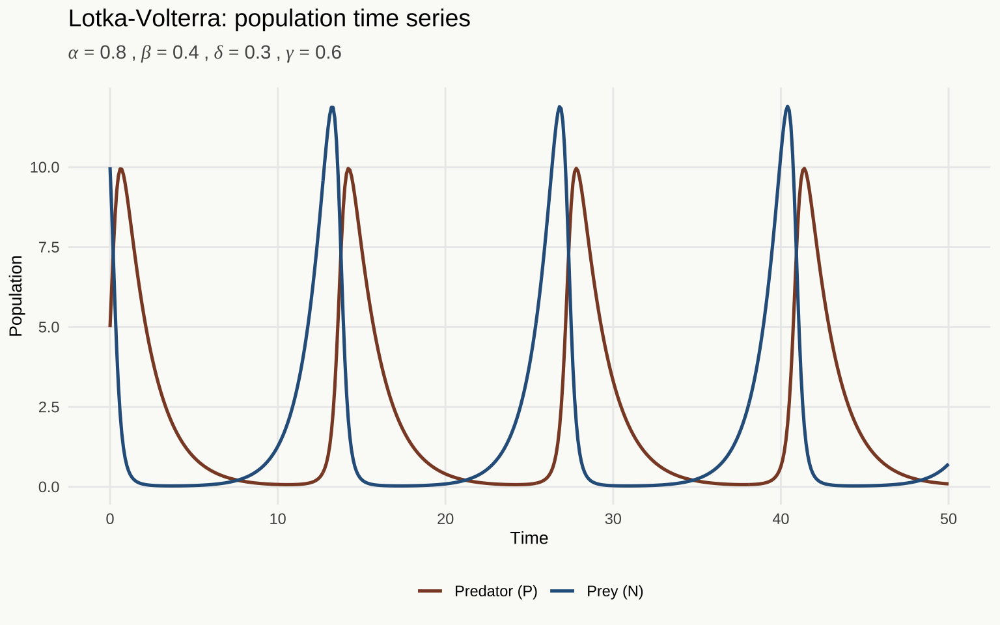
Lotka-Volterra predator-prey dynamics. Prey (blue) and predator (brown) populations cycle indefinitely. Parameters: \(\alpha = 0.8\), \(\beta = 0.4\), \(\delta = 0.3\), \(\gamma = 0.6\).
# Phase portrait: multiple initial conditions
# The system is deterministic; no seed needed
initial_conditions <- list(
c(N = 10, P = 5),
c(N = 15, P = 4),
c(N = 8, P = 7),
c(N = 20, P = 3),
c(N = 6, P = 9)
)
orbit_df <- map_dfr(
seq_along(initial_conditions),
function(i) {
out <- ode(
y = initial_conditions[[i]],
times = seq(0, 80, by = 0.05),
func = lv_ode,
parms = lv_params
)
as_tibble(as.data.frame(out)) %>%
mutate(orbit = factor(i))
}
)
# Equilibrium point
N_star <- lv_params["gamma"] / lv_params["delta"]
P_star <- lv_params["alpha"] / lv_params["beta"]
ggplot(orbit_df, aes(x = N, y = P, color = orbit)) +
geom_path(linewidth = 0.7, alpha = 0.8) +
annotate("point", x = N_star, y = P_star, size = 3, color = "#1C1C1E") +
annotate("text", x = N_star + 0.4, y = P_star + 0.3,
label = "Equilibrium", family = "Source Serif 4", size = 3.5) +
scale_color_manual(values = colorRampPalette(c("#2D5F8A", "#8A4A2D"))(5)) +
guides(color = "none") +
labs(
title = "Lotka-Volterra: phase portrait",
subtitle = "Five initial conditions, each tracing a closed orbit",
x = "Prey population (N)",
y = "Predator population (P)"
)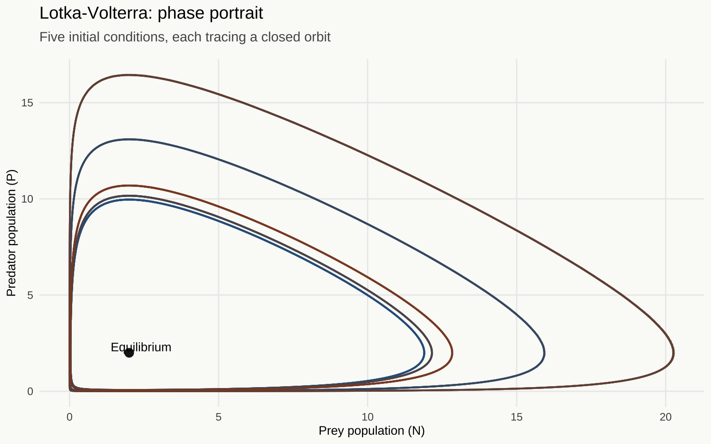
Phase portrait of Lotka-Volterra dynamics. Each curve is a closed orbit corresponding to a different initial condition. The system returns to each point on a given orbit with exact periodicity.
1.2 The Mean-Field Assumption
Something has been hiding in the product term \(\beta NP\), and it has been hiding there in plain sight.
The expression says that the rate of predator-prey encounters is proportional to the product of population sizes. For this to hold, every predator must be equally likely to encounter every prey individual at every moment. The population is perfectly mixed. Space does not exist. Individuals have no locations, no territories, no persistent relationships. There are no dense patches and no empty expanses. There is no structure at all to the spatial arrangement of individuals — or rather, the assumption is that the spatial arrangement is irrelevant because mixing is instantaneous and complete.
This is the mean-field assumption. Its name comes from physics, where it appears in the analysis of magnetic systems: the effective field experienced by any one particle is the mean field produced by all the others, rather than the specific field produced by its actual neighbors. In population ecology it enters through the functional form of the interaction term. It is not stated as an assumption in most presentations of Lotka-Volterra. It is embedded in the mathematics. The product \(NP\) is not the only way to model predator-prey encounters; it is the way that assumes perfect mixing.
The mean-field assumption is a parametric family choice: it selects the family of models governed by mass-action kinetics, excluding all others — network models, spatial models, individual-based models — before a single observation is consulted. The product \(NP\) is not a parameter to be estimated. It is the choice of family, and that choice determines what phenomena the family can express. Structured populations, spatial aggregations, social networks among individuals, heterogeneous encounter rates — these are not poorly approximated within the family. They are not in the family.
That family choice is simultaneously a choice about temporal resolution. The ODE family is defined in continuous time — formally, the limit as the time step shrinks to zero. But the interaction term \(\beta NP\) is appropriate only when the observation interval is coarse enough for the law of large numbers to operate across interactions within each step. At fine enough temporal resolution the family is misspecified: in any given instant most individuals are not contacting most others, and the product term misrepresents the actual contact process. The mean-field ODE is the right family at temporal resolutions coarse enough for spatial averaging to hold within each step. Whether that condition is satisfied is an empirical question about the system’s contact dynamics — not a modeling convenience.
The closed-orbit result depends on this assumption. The conserved quantity depends on it. When real predator-prey systems fail to cycle as neatly as the model predicts — and they often do — the mean-field assumption is frequently where the discrepancy originates. Its most important consequences, however, will not come into view until the contrast with agent-based models is drawn.
1.3 Epidemics and the Threshold Phenomenon
The same assumption appears in epidemic modeling, in precisely the same place, governing a different interaction.
A closed population of \(N\) individuals. Each is in one of three states: Susceptible, Infectious, or Recovered (and immune). Infectious individuals shed pathogen; susceptible individuals become infected upon exposure. The rate at which susceptible individuals encounter infectious ones is proportional to \(SI\) — the number of susceptibles times the number of infecteds, multiplied by a rate constant \(\beta\). Recovery occurs at per-capita rate \(\gamma\).
\[\frac{dS}{dt} = -\beta S I\]
\[\frac{dI}{dt} = \beta S I - \gamma I\]
\[\frac{dR}{dt} = \gamma I\]
The mean-field assumption is here again: the contact rate is proportional to the product \(SI\), which assumes that every susceptible individual is equally likely to contact every infectious individual. Human contact, of course, is not structured this way. People have households, workplaces, social networks — structures that make some contacts far more probable than others. The SIR model, like Lotka-Volterra, treats this structure as if it does not exist.
From the sign of \(dI/dt\) at the start of an epidemic, when \(S \approx N\):
\[\frac{dI}{dt}\bigg|_{t=0} \approx I(\beta N - \gamma) = I \cdot \gamma\left(\frac{\beta N}{\gamma} - 1\right)\]
The epidemic grows if \(\beta N / \gamma > 1\) and dies out if \(\beta N / \gamma < 1\). The quantity \(\mathcal{R}_0 = \beta N / \gamma\) is the basic reproduction number: the expected number of secondary infections produced by a single infectious individual in a fully susceptible population. It is not a numerical fact to memorize. It is a structural consequence of the model — a ratio between the transmission term and the recovery term, visible directly in the algebra. The epidemic threshold at \(\mathcal{R}_0 = 1\) is where the production of new infections exactly balances the removal of current ones.
The years since 2020 have given most people in the room considerably more opinions about this model than they might have anticipated forming. The herd immunity threshold, the effect of contact reduction, the role of \(\mathcal{R}_0\) in policy discussions — these became household concepts in a span of weeks. What remained, for the most part, unstated in those discussions was the mean-field assumption underlying the standard SIR framework: that the contact structure of the population could be adequately represented by the product \(SI\), ignoring the network topology that governs who actually contacts whom.
# SIR ODE implementation
sir_params <- c(beta = 0.0003, gamma = 0.1)
sir_state <- c(S = 990, I = 10, R = 0)
N_pop <- sum(sir_state)
# R0 under these parameters
R0_base <- sir_params["beta"] * N_pop / sir_params["gamma"]
sir_ode <- function(t, state, params) {
with(as.list(c(state, params)), {
dS <- -beta * S * I
dI <- beta * S * I - gamma * I
dR <- gamma * I
list(c(dS, dI, dR))
})
}
times_sir <- seq(0, 200, by = 0.5)
sir_out <- ode(y = sir_state, times = times_sir, func = sir_ode, parms = sir_params)
sir_df <- as_tibble(as.data.frame(sir_out)) %>%
pivot_longer(c(S, I, R), names_to = "compartment", values_to = "count") %>%
mutate(
compartment = factor(
compartment,
levels = c("S", "I", "R"),
labels = c("susceptible", "infectious", "recovered")
)
)
ggplot(sir_df, aes(x = time, y = count, color = compartment)) +
geom_line(linewidth = 0.9) +
scale_color_manual(
values = palette_ch1[c("susceptible", "infectious", "recovered")]
) +
labs(
title = "SIR epidemic dynamics",
subtitle = bquote(beta == .(sir_params["beta"]) ~ "," ~
gamma == .(sir_params["gamma"]) ~ "," ~
R[0] == .(round(R0_base, 2))),
x = "Time",
y = "Count",
color = NULL
)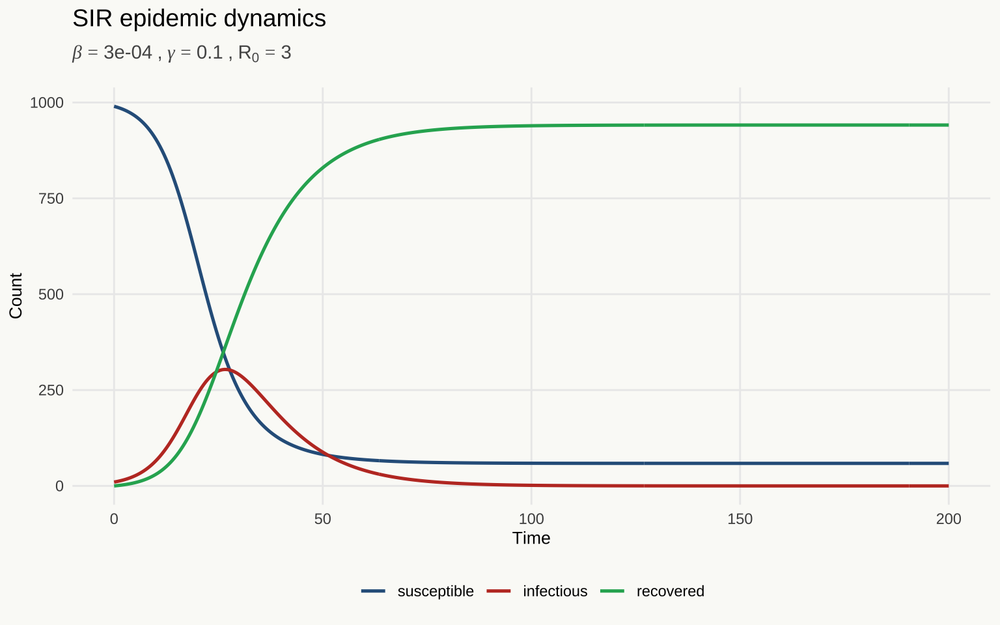
SIR epidemic dynamics. The epidemic rises, peaks when the susceptible pool is depleted sufficiently, and declines. The herd immunity threshold is reached when enough individuals have recovered that \(\mathcal{R}_0 S/N < 1\).
# Parameter sweep over R0
# Vary beta to produce different R0 values; gamma and N fixed
set.seed(2025) # seed for reproducibility; results are deterministic here, but good practice
R0_values <- c(0.8, 1.2, 1.5, 2.0, 3.0, 5.0)
gamma_fixed <- 0.1
N_fixed <- 1000
sweep_df <- map_dfr(R0_values, function(r0) {
beta_val <- r0 * gamma_fixed / N_fixed
params_i <- c(beta = beta_val, gamma = gamma_fixed)
state_i <- c(S = N_fixed - 10, I = 10, R = 0)
out_i <- ode(y = state_i, times = seq(0, 250, by = 0.5),
func = sir_ode, parms = params_i)
as_tibble(as.data.frame(out_i)) %>%
mutate(R0 = r0) %>%
select(time, I, R0)
})
ggplot(sweep_df, aes(x = time, y = I, color = factor(R0), group = factor(R0))) +
geom_line(linewidth = 0.85) +
scale_color_manual(
values = colorRampPalette(c("#AED6F1", "#C0392B"))(length(R0_values)),
name = expression(R[0])
) +
labs(
title = expression("SIR epidemic curves across values of" ~ R[0]),
x = "Time",
y = "Infectious individuals (I)"
)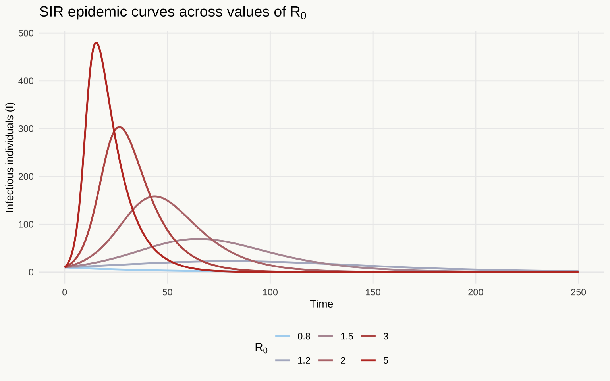
SIR epidemic curves across values of \(\mathcal{R}_0\). Each curve shows the infectious compartment \(I(t)\) for a different transmission rate. The epidemic threshold at \(\mathcal{R}_0 = 1\) is visible: below it, no outbreak occurs; above it, epidemic size grows with \(\mathcal{R}_0\).
1.4 What the Language Can Say
The ODE is a machine for processing continuous quantities. The prey population \(N = 3.7\) is as valid a model state as \(N = 37\) or \(N = 370\). This is not an approximation of discrete reality — it is a different ontology. The formalism requires it: a differential equation governing \(dN/dt\) must treat \(N\) as something smooth enough to differentiate, which means a real number rather than a count. Individuals are absent. Only totals exist.
Once populations are continuous, they must be homogeneous. The ODE tracks totals; it has no machinery for tracking distributions within compartments. If prey individuals differ in their predation risk, the ODE has nowhere to put this fact — it has only \(N\). The model therefore treats all individuals of the same type as identical: same transmission probability, same predation risk, same birth rate. The distribution of individual characteristics collapses to a point mass. A real fox population contains young foxes and old foxes, healthy and sick, bold hunters and timid ones. The ODE knows none of this, because a total is not a distribution.
Identical individuals interacting through their totals: this is already the mean-field assumption, arrived at from the inside. If all prey individuals are equivalent, the rate at which any predator encounters prey is proportional to \(N\), independently of where it is or what it has done before. If all predators are likewise equivalent, encounters occur at rate \(\beta NP\). The product term is the consequence of the prior two choices, not a third independent assumption. And with it follows everything else: space does not exist because individuals have no positions; history does not matter because the state at \(t\) — two numbers — is all there is. There is nothing to accumulate.
These are not flaws. They are choices, and they have been scientifically productive for over a century. Lotka-Volterra was formulated in the 1920s; SIR was published in 1927 by Kermack and McKendrick. The models have generated real insight into predator-prey dynamics, epidemic thresholds, herd immunity. The point is not that the choices are wrong. It is that they are a chain — continuity requires homogeneity, homogeneity implies the mean-field, the mean-field excludes position and history — and every link was forged before the modeler wrote the first equation.
The product term \(\beta NP\) is not a neutral functional form. It is a commitment — to uniformity of access, to the irrelevance of position, relationship, and history. When the commitment holds, the model is not merely adequate. It is the right instrument, not an approximation of one. When it fails, the model does not give imprecise answers. It gives precise answers about a world in which individuals have no addresses and no neighbors except everyone.
2 Agents, Networks, and the Geometry of Interaction
# Chapter 2 Setup
# Self-contained — does not depend on Chapter 1.
library(tidyverse)
library(deSolve)
library(igraph)
library(tidygraph)
library(ggraph)
library(gganimate)
library(patchwork)
theme_set(
theme_minimal(base_family = "Source Serif 4") +
theme(
plot.title = element_text(family = "Raleway", face = "plain",
size = 14, margin = margin(b = 8)),
plot.subtitle = element_text(family = "Source Serif 4", size = 11,
color = "#555555", margin = margin(b = 12)),
axis.title = element_text(family = "Source Serif 4", size = 10),
legend.position = "bottom",
panel.grid.minor = element_blank(),
plot.background = element_rect(fill = "#FAFAF7", color = NA)
)
)
palette_ch2 <- c(
prey = "#2D5F8A",
predator = "#8A4A2D",
susceptible = "#2D5F8A",
infectious = "#C0392B",
recovered = "#27AE60"
)
# ODE parameters matched to ABM transition rates.
# alpha = p_birth, gamma = p_death. beta and delta chosen so equilibrium
# N* = gamma/delta = 80, P* = alpha/beta = 25 — within the range of the
# initial conditions (200, 40) but close enough that the orbit stays
# positive throughout. Using the Ch1 parameters (N*=2, P*=2) with
# initial conditions of (200, 40) produces an orbit that swings N to
# ~10^-50, causing the ODE solver to output negative populations.
lv_params_ch2 <- c(alpha = 0.15, beta = 0.006, delta = 0.00125, gamma = 0.10)
lv_ode_ch2 <- function(t, state, params) {
with(as.list(c(state, params)), {
dN <- alpha * N - beta * N * P
dP <- delta * N * P - gamma * P
list(c(dN, dP))
})
}
sir_params_ch2 <- c(beta = 0.0003, gamma = 0.1)
sir_ode_ch2 <- function(t, state, params) {
with(as.list(c(state, params)), {
dS <- -beta * S * I
dI <- beta * S * I - gamma * I
dR <- gamma * I
list(c(dS, dI, dR))
})
}2.1 What Is an Agent?
The ODE compresses a population of a hundred rabbits to the number 100. Not an approximation of the rabbits — the number, standing in for all of them. The rabbits have no locations, no ages, no histories of particular encounters. Each is identical to every other in every respect the model can represent, which is to say in every respect. The model works with their total, and the total is everything.
The agent-based model takes those hundred rabbits seriously as a hundred rabbits. Each has a state. Each has a neighborhood: the set of other agents it can actually interact with at this time step. The neighborhood is the structural innovation — the thing the ODE does not have and cannot have.
In the ODE, the effective neighborhood of every individual is the entire population, weighted by abundance, continuously. This is what the product term \(\beta NP\) says: the encounter rate between any predator and any prey is proportional to both population sizes, equally, everywhere, always. The individual’s position in space, its social relationships, its proximity to particular others — these do not exist as model objects. There is only the aggregate.
Give an agent a neighborhood smaller than the full population, and you give the model a new kind of sentence. The neighborhood can be spatial — the eight cells surrounding a position on a grid. It can be social — the edges of a contact network. Whatever its structure, the moment it differs from “the entire population, uniformly weighted,” the mean-field assumption fails. And with it falls the constraint that has been keeping certain phenomena outside the model’s language.
2.2 An Agent-Based Lotka-Volterra
An agent-based Lotka-Volterra keeps the same biology as the differential equations — prey reproduce, predators hunt, predators die — but represents the population as a collection of discrete individuals rather than a continuous quantity.
The population is a tibble with one row per individual. Each row carries an identifier, a type (prey or predator), and an alive status. At each discrete time step: each surviving prey individual reproduces with probability \(p_\text{birth}\); each predator is matched with a random prey individual and, if an encounter occurs, kills the prey and may produce offspring with probability \(p_\text{eat}\); each predator dies with probability \(p_\text{death}\). The numbers \(p_\text{birth}\), \(p_\text{eat}\), \(p_\text{death}\) correspond, in a loose sense, to the ODE parameters \(\alpha\), \(\beta\delta\), and \(\gamma\) — but they now operate at the level of individuals rather than populations.
# Agent-based Lotka-Volterra
# Population represented as a tibble with one row per individual
init_lv_abm <- function(n_prey, n_pred) {
# Initialize population with prey and predator agents
bind_rows(
tibble(id = seq_len(n_prey), type = "prey", alive = TRUE),
tibble(id = seq_len(n_pred) + n_prey, type = "predator", alive = TRUE)
)
}
step_lv_abm <- function(pop, p_birth = 0.15, p_eat = 0.20, p_death = 0.10,
max_pop = 5000L) {
# One time step of the agent-based LV model
prey <- filter(pop, type == "prey", alive)
preds <- filter(pop, type == "predator", alive)
max_id <- max(pop$id, 0L)
# --- Prey reproduction ---
# Each alive prey reproduces with probability p_birth.
# max_pop is a safety cap: births are suppressed when prey exceed this
# threshold, preventing runaway population growth in parameter regimes
# where predation is temporarily low.
n_born <- if (nrow(prey) >= max_pop) 0L else rbinom(1, nrow(prey), p_birth)
new_prey <- if (n_born > 0) {
tibble(id = seq_len(n_born) + max_id, type = "prey", alive = TRUE)
} else {
tibble(id = integer(), type = character(), alive = logical())
}
max_id <- max_id + n_born
# --- Predator-prey encounters ---
# Random pairing of predators and prey; each encounter kills prey with p_eat
# and produces a new predator offspring with the same probability
n_enc <- min(nrow(prey), nrow(preds))
dead_prey_ids <- integer(0)
new_pred_rows <- tibble(id = integer(), type = character(), alive = logical())
if (n_enc > 0) {
p_sample <- slice_sample(prey, n = n_enc)
pr_sample <- slice_sample(preds, n = n_enc)
eaten <- rbinom(n_enc, 1, p_eat) == 1
dead_prey_ids <- p_sample$id[eaten]
n_new_pred <- sum(eaten)
if (n_new_pred > 0) {
new_pred_rows <- tibble(
id = seq_len(n_new_pred) + max_id,
type = "predator",
alive = TRUE
)
max_id <- max_id + n_new_pred
}
}
# --- Predator natural death ---
# Each alive predator dies with probability p_death
dead_pred_ids <- preds$id[rbinom(nrow(preds), 1, p_death) == 1]
# Update population: remove dead agents, add new ones
pop_surviving <- pop %>%
mutate(alive = alive & !(id %in% c(dead_prey_ids, dead_pred_ids))) %>%
filter(alive)
bind_rows(pop_surviving, new_prey, new_pred_rows)
}
run_lv_abm <- function(T = 200, n_prey = 100, n_pred = 20, seed = 42, ...) {
# Run the ABM for T steps and return a tidy time series
set.seed(seed) # seed for reproducibility; change to explore stochastic variation
pop <- init_lv_abm(n_prey, n_pred)
map_dfr(0:T, function(tt) {
if (tt > 0) pop <<- step_lv_abm(pop, ...)
tibble(
t = tt,
prey = sum(pop$type == "prey"),
predator = sum(pop$type == "predator")
)
})
}# Run 10 ABM replications with a large population
# Each run uses a different seed to show stochastic variation
set.seed(2025) # master seed for reproducibility
n_reps <- 10
T_run <- 120 # ~2-3 LV cycles; sufficient to show convergence
n_prey0 <- 200 # large enough for law-of-large-numbers effects
n_pred0 <- 40
abm_runs <- map_dfr(1:n_reps, function(rep) {
run_lv_abm(T = T_run, n_prey = n_prey0, n_pred = n_pred0, seed = rep,
p_birth = 0.15, p_eat = 0.20, p_death = 0.10) %>%
mutate(rep = rep)
})
# ODE solution for comparison — scaled to the same initial conditions
ode_state_ch2 <- c(N = n_prey0, P = n_pred0)
ode_out_ch2 <- ode(
y = ode_state_ch2,
times = seq(0, T_run, by = 1),
func = lv_ode_ch2,
parms = lv_params_ch2
)
ode_df_ch2 <- as_tibble(as.data.frame(ode_out_ch2)) %>%
rename(t = time, prey = N, predator = P)
# Tidy ABM runs for plotting
abm_long <- abm_runs %>%
pivot_longer(c(prey, predator), names_to = "species", values_to = "count")
ode_long <- ode_df_ch2 %>%
pivot_longer(c(prey, predator), names_to = "species", values_to = "count")
ggplot() +
geom_line(
data = abm_long,
aes(x = t, y = count, color = species, group = interaction(rep, species)),
alpha = 0.2, linewidth = 0.5
) +
geom_line(
data = ode_long,
aes(x = t, y = count, color = species),
linewidth = 1.2
) +
scale_color_manual(
values = palette_ch2[c("prey", "predator")],
labels = c("prey" = "Prey", "predator" = "Predator")
) +
labs(
title = "ABM replicates vs. ODE solution",
subtitle = "Translucent lines: 10 stochastic ABM runs. Solid lines: ODE. N = 200 prey, 40 predators.",
x = "Time step",
y = "Population count",
color = NULL
)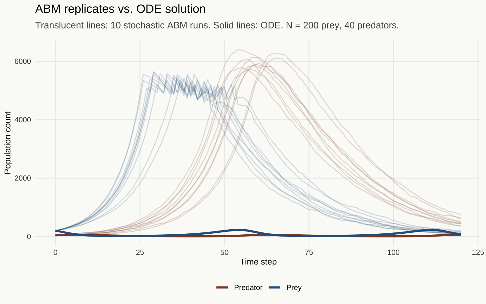
The reduction result: ten stochastic ABM runs (translucent ribbons) overlaid on the ODE solution (solid lines). Under large populations and random mixing, the ABM converges to the ODE. The ODE is not a competing model; it is what the ABM becomes when the mean-field assumption is exactly satisfied.
Under random mixing and large population size, the law of large numbers smooths the stochastic fluctuations, and the average behavior of the ABM approaches the ODE solution. The ODE is a limiting case of the ABM — not a different theory, but the same theory under a specific and identifiable set of conditions: random mixing and large numbers. The mean-field assumption, stated explicitly, is the claim that these conditions hold exactly.
Now reduce the population.
# Small-population ABM: extinction is possible
set.seed(2025) # reproducibility
n_reps_small <- 15
T_small <- 150
n_prey_small <- 20 # small enough for demographic stochasticity to matter
n_pred_small <- 6
abm_small <- map_dfr(1:n_reps_small, function(rep) {
run_lv_abm(
T = T_small,
n_prey = n_prey_small,
n_pred = n_pred_small,
seed = rep + 100,
p_birth = 0.15,
p_eat = 0.20,
p_death = 0.10
) %>%
mutate(rep = rep)
})
# ODE solution with the same (small) initial conditions
ode_small_state <- c(N = n_prey_small, P = n_pred_small)
ode_small_out <- ode(
y = ode_small_state,
times = seq(0, T_small, by = 1),
func = lv_ode_ch2,
parms = lv_params_ch2
)
ode_small_df <- as_tibble(as.data.frame(ode_small_out)) %>%
rename(t = time, prey = N, predator = P) %>%
pivot_longer(c(prey, predator), names_to = "species", values_to = "count")
abm_small_long <- abm_small %>%
pivot_longer(c(prey, predator), names_to = "species", values_to = "count")
# Count extinctions
extinction_count <- abm_small %>%
group_by(rep) %>%
summarise(
prey_extinct = any(prey == 0),
predator_extinct = any(predator == 0)
) %>%
summarise(
n_any_extinct = sum(prey_extinct | predator_extinct)
) %>%
pull(n_any_extinct)
ggplot() +
geom_line(
data = abm_small_long,
aes(x = t, y = count, color = species, group = interaction(rep, species)),
alpha = 0.25, linewidth = 0.5
) +
geom_line(
data = ode_small_df,
aes(x = t, y = count, color = species),
linewidth = 1.2, linetype = "dashed"
) +
scale_color_manual(
values = palette_ch2[c("prey", "predator")],
labels = c("prey" = "Prey", "predator" = "Predator")
) +
labs(
title = "Small-population ABM: extinction events",
subtitle = paste0(
extinction_count, " of ", n_reps_small,
" runs reach extinction. Dashed: ODE (cycles forever). N\u2080 = ",
n_prey_small, " prey, ", n_pred_small, " predators."
),
x = "Time step",
y = "Population count",
color = NULL
)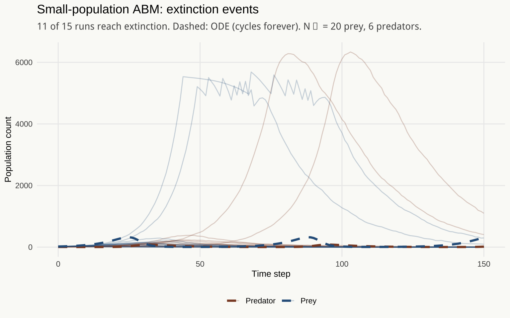
The ODE cannot see extinction. With small populations, ABM runs frequently reach zero <U+2014> a state the ODE cannot represent. The ODE orbits forever; the ABM can, and often does, fall to zero and stay there.
The ODE orbits forever. For a continuous quantity that obeys a smooth differential equation, there is no path to zero unless you engineer one by hand. The ABM can fall to zero because it represents discrete individuals: when the last prey individual dies, the population is extinguished, and that is a state from which there is no return. The phenomenon of extinction — one of the most consequential events in population biology — is inexpressible in the ODE’s language. Not unlikely. Not improbable. Grammatically forbidden.
2.3 An Agent-Based SIR
2.3.1 Random Mixing
The agent-based SIR under random mixing is the bridge between the ODE model and the network model. It preserves the mean-field assumption — each infectious individual contacts random members of the population — but represents agents as discrete individuals rather than continuous quantities.
# Agent-based SIR with random mixing
# Each infectious agent contacts a random subset of the population at each step
run_sir_abm_random <- function(N = 500, I0 = 5, p_infect = 0.05,
p_recover = 0.1, contacts_per_step = 5,
T = 150, seed = 42) {
set.seed(seed) # seed for reproducibility; change to explore variation
agents <- tibble(
id = seq_len(N),
state = c(rep("I", I0), rep("S", N - I0))
)
map_dfr(0:T, function(tt) {
if (tt > 0) {
infected_ids <- agents$id[agents$state == "I"]
# Each infected agent makes contacts with random agents
new_infected <- map(infected_ids, function(inf_id) {
contacts <- sample(setdiff(agents$id, inf_id),
min(contacts_per_step, N - 1),
replace = FALSE)
suscept_contacts <- contacts[agents$state[contacts] == "S"]
if (length(suscept_contacts) == 0) return(integer(0))
suscept_contacts[rbinom(length(suscept_contacts), 1, p_infect) == 1]
}) %>%
unlist() %>%
unique()
# Recovery
recovering <- infected_ids[rbinom(length(infected_ids), 1, p_recover) == 1]
agents <<- agents %>%
mutate(state = case_when(
id %in% new_infected & state == "S" ~ "I",
id %in% recovering ~ "R",
TRUE ~ state
))
}
tibble(
t = tt,
S = sum(agents$state == "S"),
I = sum(agents$state == "I"),
R = sum(agents$state == "R")
)
})
}set.seed(2025)
N_sir_compare <- 500
I0_compare <- 5
# Run ABM replicates
sir_abm_runs <- map_dfr(1:10, function(rep) {
run_sir_abm_random(
N = N_sir_compare, I0 = I0_compare,
p_infect = 0.05, p_recover = 0.1, contacts_per_step = 5,
T = 150, seed = rep + 200
) %>%
mutate(rep = rep)
})
# ODE comparison — match approximate R0
# R0 ≈ (p_infect * contacts_per_step) / p_recover (rough approximation)
approx_R0 <- (0.05 * 5) / 0.1
beta_match <- approx_R0 * 0.1 / N_sir_compare
sir_ode_state <- c(S = N_sir_compare - I0_compare, I = I0_compare, R = 0)
sir_ode_out <- ode(
y = sir_ode_state,
times = seq(0, 150, by = 0.5),
func = sir_ode_ch2,
parms = c(beta = beta_match, gamma = 0.1)
)
sir_ode_compare <- as_tibble(as.data.frame(sir_ode_out)) %>%
rename(t = time)
sir_abm_long <- sir_abm_runs %>%
pivot_longer(c(S, I, R), names_to = "compartment", values_to = "count") %>%
mutate(compartment = factor(compartment, levels = c("S", "I", "R"),
labels = c("susceptible", "infectious", "recovered")))
sir_ode_long <- sir_ode_compare %>%
pivot_longer(c(S, I, R), names_to = "compartment", values_to = "count") %>%
mutate(compartment = factor(compartment, levels = c("S", "I", "R"),
labels = c("susceptible", "infectious", "recovered")))
ggplot() +
geom_line(
data = sir_abm_long,
aes(x = t, y = count, color = compartment,
group = interaction(rep, compartment)),
alpha = 0.2, linewidth = 0.4
) +
geom_line(
data = sir_ode_long,
aes(x = t, y = count, color = compartment),
linewidth = 1.1
) +
scale_color_manual(
values = palette_ch2[c("susceptible", "infectious", "recovered")]
) +
labs(
title = "ABM SIR (random mixing) vs. ODE",
subtitle = paste0("N = ", N_sir_compare, "; 10 stochastic replicates (faint) vs. ODE (solid)"),
x = "Time step",
y = "Count",
color = NULL
)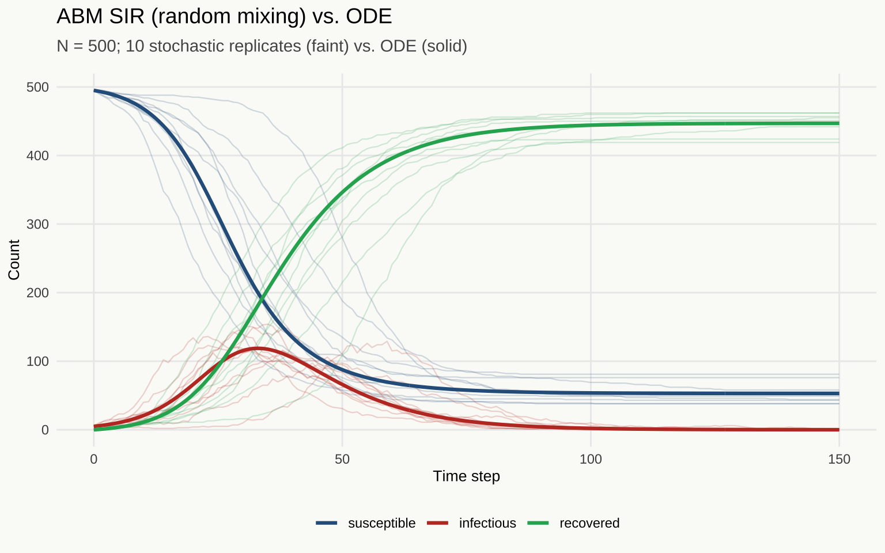
Agent-based SIR under random mixing (N = 500, 10 replicates shown as translucent lines) vs. ODE solution (solid lines). Convergence to the ODE is visible: the individual-based model recovers the mean-field dynamics when contacts are drawn uniformly from the population.
2.3.2 Network SIR
Now give the agents an address.
set.seed(2025) # reproducibility for network generation
N_net <- 500
avg_deg <- 6 # target mean degree
# Erdos-Renyi: edges placed independently with fixed probability
# Mean degree = p * (N - 1) ≈ avg_deg
g_er <- igraph::erdos.renyi.game(N_net, p = avg_deg / (N_net - 1))
# Barabasi-Albert: preferential attachment produces a heavy-tailed degree distribution
# m = edges added per new node; mean degree ≈ 2m
g_ba <- igraph::sample_pa(N_net, m = avg_deg / 2, directed = FALSE)
# Verify mean degrees are comparable
mean_deg_er <- mean(igraph::degree(g_er))
mean_deg_ba <- mean(igraph::degree(g_ba))The two networks have comparable mean degree — each individual is connected to roughly the same number of others on average. What differs is the distribution of that degree. The Erdős-Rényi graph is the random graph: each pair of nodes is connected independently with fixed probability, and the degree distribution is approximately Poisson. In a Poisson degree distribution, most nodes have degree close to the mean; there are no hubs. The Barabási-Albert graph grows by preferential attachment — new nodes attach to existing nodes in proportion to their current degree, and rich nodes get richer. The result is a scale-free degree distribution: most nodes have few connections, but a small number of hubs have very many. These hubs do not appear in an Erdős-Rényi network with the same mean degree.
# Network SIR: infection spreads along edges
# Nodes are infected by each infected neighbor independently with probability p_infect
run_network_sir <- function(g, I0 = 5, p_infect = 0.05, p_recover = 0.1,
T = 100, seed = 42) {
set.seed(seed) # seed for reproducibility
N <- igraph::vcount(g)
state <- rep("S", N)
state[sample(N, I0)] <- "I"
# Precompute adjacency list for fast neighbor lookup
adj <- igraph::as_adj_list(g)
map_dfr(0:T, function(tt) {
if (tt > 0) {
infected_ids <- which(state == "I")
# Collect newly infected nodes
new_I <- integer(0)
for (v in infected_ids) {
nbrs <- as.integer(adj[[v]])
suscept_nbrs <- nbrs[state[nbrs] == "S"]
if (length(suscept_nbrs) > 0) {
newly <- suscept_nbrs[rbinom(length(suscept_nbrs), 1, p_infect) == 1]
new_I <- c(new_I, newly)
}
}
# Recovery
recovering <- infected_ids[rbinom(length(infected_ids), 1, p_recover) == 1]
# Update states — order matters: infections before recoveries
state[unique(new_I)] <<- "I"
state[recovering] <<- "R"
}
tibble(
t = tt,
S = sum(state == "S"),
I = sum(state == "I"),
R = sum(state == "R")
)
})
}set.seed(2025)
# Run SIR on both networks with identical parameters
sir_er <- run_network_sir(g_er, I0 = 5, p_infect = 0.05, p_recover = 0.1,
T = 100, seed = 301)
sir_ba <- run_network_sir(g_ba, I0 = 5, p_infect = 0.05, p_recover = 0.1,
T = 100, seed = 302)
sir_network_df <- bind_rows(
mutate(sir_er, network = "Erdős-Rényi"),
mutate(sir_ba, network = "Barabási-Albert")
)sir_network_long <- sir_network_df %>%
pivot_longer(c(S, I, R), names_to = "compartment", values_to = "count") %>%
mutate(
compartment = factor(compartment, levels = c("S", "I", "R"),
labels = c("susceptible", "infectious", "recovered"))
)
ggplot(sir_network_long, aes(x = t, y = count, color = compartment)) +
geom_line(linewidth = 0.9) +
facet_wrap(~ network, labeller = label_both) +
scale_color_manual(values = palette_ch2[c("susceptible", "infectious", "recovered")]) +
labs(
title = "Network SIR: topology changes the epidemic",
subtitle = paste0("Mean degree ≈ ", round(mean_deg_er, 1),
" (ER) and ≈ ", round(mean_deg_ba, 1), " (BA). Same parameters; different structure."),
x = "Time step",
y = "Count",
color = NULL
)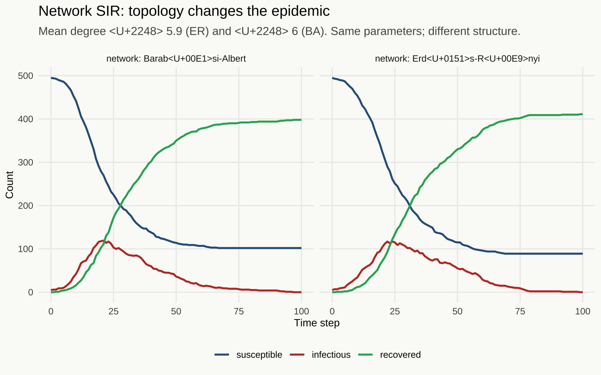
SIR epidemic curves on two networks with the same mean degree. The Barab<U+00E1>si-Albert scale-free network (right) produces faster initial spread through hubs, different peak timing, and a different final epidemic size than the structurally simpler Erd<U+0151>s-R<U+00E9>nyi graph (left). The same transmission parameters; different interaction structures; different epidemics.
set.seed(2025)
# Find peak time for each network
t_peak_er <- sir_er %>% filter(I == max(I)) %>% slice(1) %>% pull(t)
t_peak_ba <- sir_ba %>% filter(I == max(I)) %>% slice(1) %>% pull(t)
# Helper: get node states at a given time step
get_states_at_t <- function(g, t_target, I0 = 5, p_infect = 0.05,
p_recover = 0.1, seed = 42) {
set.seed(seed)
N <- igraph::vcount(g)
state <- rep("S", N)
state[sample(N, I0)] <- "I"
adj <- igraph::as_adj_list(g)
for (tt in seq_len(t_target)) {
infected_ids <- which(state == "I")
new_I <- integer(0)
for (v in infected_ids) {
nbrs <- as.integer(adj[[v]])
suscept_nbrs <- nbrs[state[nbrs] == "S"]
if (length(suscept_nbrs) > 0) {
newly <- suscept_nbrs[rbinom(length(suscept_nbrs), 1, p_infect) == 1]
new_I <- c(new_I, newly)
}
}
recovering <- infected_ids[rbinom(length(infected_ids), 1, p_recover) == 1]
state[unique(new_I)] <- "I"
state[recovering] <- "R"
}
state
}
states_er <- get_states_at_t(g_er, t_peak_er, seed = 301)
states_ba <- get_states_at_t(g_ba, t_peak_ba, seed = 302)
# Tidygraph objects for ggraph
tg_er <- as_tbl_graph(g_er) %>%
mutate(compartment = states_er,
network = "Erdős-Rényi")
tg_ba <- as_tbl_graph(g_ba) %>%
mutate(compartment = states_ba,
network = "Barabási-Albert")
plot_network <- function(tg, title_str, t_peak) {
ggraph(tg, layout = "fr") +
geom_edge_link(alpha = 0.05, color = "#888888") +
geom_node_point(aes(color = compartment), size = 1.2, alpha = 0.8) +
scale_color_manual(
values = c(S = "#2D5F8A", I = "#C0392B", R = "#27AE60"),
labels = c(S = "susceptible", I = "infectious", R = "recovered"),
name = NULL
) +
labs(title = title_str,
subtitle = paste0("At peak infectious (t = ", t_peak, ")")) +
theme_void(base_family = "Source Serif 4") +
theme(legend.position = "bottom",
plot.title = element_text(family = "Raleway", size = 12),
plot.background = element_rect(fill = "#FAFAF7", color = NA))
}
p_er_net <- plot_network(tg_er, "Erdős-Rényi", t_peak_er)
p_ba_net <- plot_network(tg_ba, "Barabási-Albert", t_peak_ba)
p_er_net + p_ba_net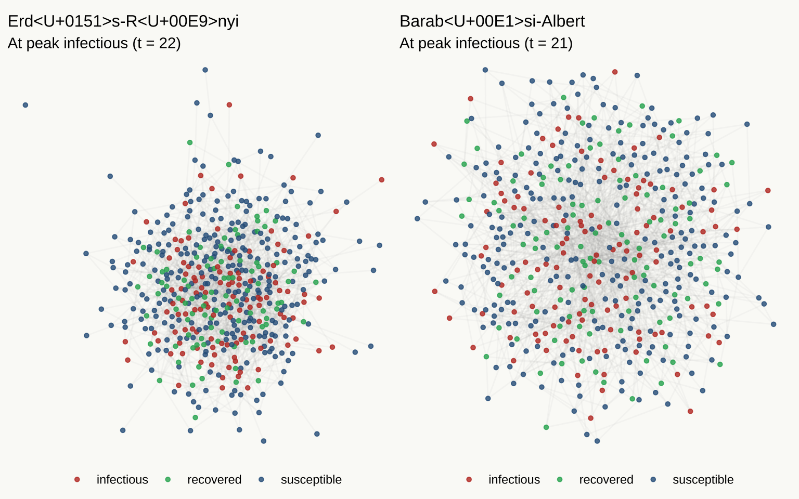
Contact network structures at the peak of the epidemic. Node color indicates compartment status: blue = susceptible, red = infectious, green = recovered. Left: Erd<U+0151>s-R<U+00E9>nyi graph, with roughly uniform degree distribution. Right: Barab<U+00E1>si-Albert graph, with visible hub nodes carrying many connections. The hub structure changes the epidemic’s geometry.
The same \(\beta\). The same \(\gamma\). A different world.
The ODE cannot express this difference. Not because it has the wrong parameter values — there are no parameter values of the ODE that would reproduce the difference between these two epidemics, because the ODE has no parameter that represents contact network topology. The contact structure is not a parameter of the ODE. It is excluded from its language. The question “what does network topology do to epidemic dynamics?” cannot be asked in the ODE’s vocabulary. The ODE is not giving the wrong answer to that question. It is incapable of posing it.
2.4 The Reduction Theorem
The relationship between the ODE and the ABM is precise and worth stating directly: as population size grows, as mixing becomes increasingly random, as individual heterogeneity averages out, and as the time step grows coarse enough for within-step interactions to average to the mean-field, the ABM converges in distribution to the ODE. The ODE is not wrong — it is a limit. It is what the ABM becomes when the mean-field assumption is exactly satisfied across both its spatial and temporal dimensions.
This framing dissolves the apparent competition between the two paradigms. The ODE and the ABM are not two competing theories of the same phenomena, between which a modeler must choose on philosophical grounds. They are a richer language and one of its sublanguages. The ODE is the ABM with an additional constraint — that the interaction structure is fully mixed — imposed silently. Every ABM that includes random mixing as a special case contains the ODE as a theorem.
When a phenomenon requires the mean-field assumption to be satisfied — when populations are large, mixing is genuinely random, heterogeneity is genuinely negligible, and the observation interval is coarse enough for within-step averaging to hold — the ODE is the right tool, because it is analytically tractable and the additional machinery of the ABM contributes nothing. When a phenomenon depends on features that the mean-field assumption rules out — network topology, spatial structure, heterogeneity, discrete-individual effects like extinction — the ODE cannot reach it, and no calibration of the ODE’s parameters will change that.
The choice between ODE and ABM is therefore not a choice between simple and complex, or tractable and intractable. It is a choice about which phenomena are in scope. The ABM critic who objects to unnecessary complexity should ask: complexity relative to what problem? If the problem is the epidemic threshold in a large, well-mixed population, the ODE is the right language and adding agent-level detail is indeed unnecessary. If the problem is the effect of household structure on epidemic dynamics, the ODE cannot address it at all, regardless of how aggressively it is simplified.
The complexity objection has a more specific form that deserves a direct answer. The ABM just described has more nominal parameters than the Lotka-Volterra ODE: \(p_\text{birth}\), \(p_\text{eat}\), \(p_\text{death}\), the population size, the details of the pairing mechanism. The ODE has four: \(\alpha\), \(\beta\), \(\delta\), \(\gamma\).
Nominal dimensionality is not effective dimensionality. A regression with a thousand predictors may have a sparse solution that uses ten. The other nine hundred and ninety exist — they have coefficients, they occupy the nominal space — but the signal lives on a low-dimensional manifold within that space, and a well-chosen penalty recovers it. The statistician who counts predictors before asking whether the signal is sparse has the analysis backwards. The critic who counts ABM parameters before asking how many degrees of freedom the dynamics of interest actually require has made the same mistake. Most of the ABM’s parameter space produces qualitatively identical behavior — cycling that is statistically indistinguishable from the ODE output. The consequential structure — the boundary between cycling and extinction, the dependence of extinction probability on population size — is concentrated on a surface of far lower dimension than the nominal parameter count suggests.
The ODE is the limiting case of this argument. It is the ABM under maximal regularization — a structural restriction so complete that all individual heterogeneity and interaction structure collapses to population totals, leaving four parameters. Whether that is the right level of regularization depends on whether the phenomenon of interest lies within its expressive range. For the epidemic threshold in a large, well-mixed population, it is. For extinction events, it is not. The regularization that produces the ODE’s simplicity also removes certain phenomena from its vocabulary, and no amount of careful parameter estimation recovers what that regularization has already discarded.
2.5 Spatial Extension (Reference Module)
Note for readers: This section is provided for self-study and is not covered in the live session. The code below implements a full spatial Lotka-Volterra model on a grid. In the live session, the output animation is shown as a demonstration; the code walkthrough is skipped because the principle has already been established. Students who wish to explore the spatial extension are encouraged to run this code and experiment with the parameters.
The spatial extension moves the Lotka-Volterra dynamics onto a discrete grid. Each cell of the grid can hold prey and predators. Interactions are local: agents interact only with their Moore neighborhood (the eight adjacent cells). The mean-field assumption is replaced by a spatial interaction structure — every individual’s neighborhood is its eight immediate neighbors, not the entire population.
The consequence is qualitative, not merely quantitative. Spatial structure can sustain populations that the mean-field dynamics would drive to extinction. It can produce spatial pattern formation — spiral waves of prey and predator density rotating through the grid. These patterns are not present in the ODE and cannot be approximated by the ODE, because they are spatial phenomena and the ODE has no spatial dimension. They require the spatial language to exist at all.
# SELF-STUDY EXTENSION: Spatial Lotka-Volterra on a grid
# This code is included in the distributed materials for student exploration.
# The animation requires gifski; rendering may take several minutes.
# The live session shows a pre-rendered animation; this code is not run live.
set.seed(2025) # seed for reproducibility; different seeds produce different spiral patterns
GRID_SIZE <- 50
T_SPATIAL <- 120
# Initialize grid: each cell is a row in a tibble with prey and predator counts
init_spatial_grid <- function(size = GRID_SIZE, n_prey = 400, n_pred = 80) {
grid <- expand.grid(x = 1:size, y = 1:size) %>%
as_tibble() %>%
mutate(prey = 0L, predator = 0L)
# Distribute initial agents randomly across cells
prey_cells <- sample(nrow(grid), n_prey, replace = TRUE)
pred_cells <- sample(nrow(grid), n_pred, replace = TRUE)
for (cell in prey_cells) grid$prey[cell] <- grid$prey[cell] + 1L
for (cell in pred_cells) grid$predator[cell] <- grid$predator[cell] + 1L
grid
}
# Moore neighborhood indices on a toroidal grid (wraps at boundaries)
moore_nbr_indices <- function(x, y, size, grid_df) {
dx <- c(-1L, 0L, 1L, -1L, 1L, -1L, 0L, 1L)
dy <- c(-1L, -1L, -1L, 0L, 0L, 1L, 1L, 1L)
nx <- ((x + dx - 1L) %% size) + 1L
ny <- ((y + dy - 1L) %% size) + 1L
# Return row indices into the grid tibble
(ny - 1L) * size + nx
}
# One step of the spatial LV model
step_spatial_lv <- function(grid, size = GRID_SIZE,
p_birth = 0.25, p_eat = 0.35, p_death = 0.12,
p_move = 0.4) {
new_grid <- grid
for (i in seq_len(nrow(grid))) {
x <- grid$x[i]
y <- grid$y[i]
nbr_idx <- moore_nbr_indices(x, y, size, grid)
# --- Prey reproduction with offspring dispersal to random neighbor ---
if (grid$prey[i] > 0L) {
born <- rbinom(1L, grid$prey[i], p_birth)
if (born > 0L) {
# Offspring land in random neighboring cells
targets <- sample(nbr_idx, born, replace = TRUE)
for (target in targets) {
new_grid$prey[target] <- new_grid$prey[target] + 1L
}
}
}
# --- Predator-prey encounter: local predation ---
if (grid$prey[i] > 0L && grid$predator[i] > 0L) {
encounters <- min(grid$prey[i], grid$predator[i])
eaten <- rbinom(1L, encounters, p_eat)
new_grid$prey[i] <- max(0L, new_grid$prey[i] - eaten)
# Each kill produces a new predator with probability 0.7
offspring <- rbinom(1L, eaten, 0.7)
new_grid$predator[i] <- new_grid$predator[i] + offspring
}
# --- Predator natural death ---
if (grid$predator[i] > 0L) {
dead <- rbinom(1L, grid$predator[i], p_death)
new_grid$predator[i] <- max(0L, new_grid$predator[i] - dead)
}
# --- Predator movement toward most prey-dense neighbor ---
if (new_grid$predator[i] > 0L && runif(1L) < p_move) {
# Find neighbor with most prey
nbr_prey <- grid$prey[nbr_idx]
best_nbr_pos <- which.max(nbr_prey)
target_idx <- nbr_idx[best_nbr_pos]
# Move a binomial fraction of predators to that neighbor
movers <- rbinom(1L, new_grid$predator[i], p_move)
new_grid$predator[i] <- new_grid$predator[i] - movers
new_grid$predator[target_idx] <- new_grid$predator[target_idx] + movers
}
}
new_grid
}
# Run the spatial model and collect frames for animation
spatial_grid <- init_spatial_grid()
spatial_frames <- vector("list", T_SPATIAL)
spatial_frames[[1]] <- mutate(spatial_grid, t = 1L)
for (tt in 2:T_SPATIAL) {
spatial_grid <- step_spatial_lv(spatial_grid)
spatial_frames[[tt]] <- mutate(spatial_grid, t = as.integer(tt))
# Early termination if total population crashes to zero
if (sum(spatial_grid$prey) == 0 || sum(spatial_grid$predator) == 0) break
}
spatial_df <- bind_rows(spatial_frames)
# Prey density animation
spatial_anim <- ggplot(spatial_df, aes(x = x, y = y, fill = prey)) +
geom_tile() +
scale_fill_gradient(
low = "#FAFAF7",
high = "#2D5F8A",
name = "Prey count"
) +
coord_equal() +
labs(
title = "Spatial Lotka-Volterra — prey density",
subtitle = "Time: {as.integer(frame_time)}"
) +
theme_void(base_family = "Source Serif 4") +
theme(
plot.background = element_rect(fill = "#FAFAF7", color = NA),
plot.title = element_text(family = "Raleway", size = 12),
legend.position = "right"
) +
transition_time(t) +
ease_aes("linear")
# Uncomment to save the animation (requires gifski package):
# anim_save(
# "spatial_lv.gif",
# animate(spatial_anim, nframes = T_SPATIAL, fps = 10, width = 600, height = 600)
# )The spiral wave patterns that emerge from the spatial model are a dynamical regime without a name in the ODE vocabulary. They require spatial coordinates to exist. The ODE’s world has no place for them, not because they are exotic or unusual, but because the ODE is a language in which spatial position has no representation. The patterns are grammatically inexpressible — not as an approximation error, but as a structural fact about the model’s language.
3 The Size of Firms, and What It Tells Us
# Chapter 3 Setup
# Self-contained — does not depend on prior chapters.
library(tidyverse)
library(poweRlaw)
library(broom)
library(patchwork)
theme_set(
theme_minimal(base_family = "Source Serif 4") +
theme(
plot.title = element_text(family = "Raleway", face = "plain",
size = 14, margin = margin(b = 8)),
plot.subtitle = element_text(family = "Source Serif 4", size = 11,
color = "#555555", margin = margin(b = 12)),
axis.title = element_text(family = "Source Serif 4", size = 10),
legend.position = "bottom",
panel.grid.minor = element_blank(),
plot.background = element_rect(fill = "#FAFAF7", color = NA)
)
)3.1 A Regularity That Refuses to Go Away
In virtually every measured economy, at virtually every measured time, the distribution of firm sizes by employment follows a power law. The United States in 1990, France in 2005, India in 2010 — the exponent shifts slightly, the lower bound shifts with institutional definitions of what constitutes a firm, but the power law structure persists. This is among the most robustly documented regularities in empirical economics, and it is one that standard economic models are structurally incapable of reproducing.
The dynamic range is the first clue that something unusual is happening. The largest firms in the US economy employ hundreds of thousands of workers; the smallest employ one. The ratio between these extremes is on the order of \(10^5\) or \(10^6\). A normal distribution cannot span that range without assigning negligible probability to the observed data. A log-normal can span it, and the log-normal has been proposed as an alternative; but the fit is systematically worse in the upper tail, where the data are densest in the logarithmic sense that matters for a power law.
A power law distribution has the form \(P(\text{size} \geq x) \propto x^{-(\alpha - 1)}\) for \(x \geq x_\text{min}\). In logarithmic coordinates, the complementary cumulative distribution function is a straight line with slope \(-(\alpha - 1)\). On a linear scale, the distribution looks like a spike near zero and an invisible tail. The linear plot defeats the intuition; the log-log plot reveals the structure.
# NOTE: The data below are synthetic, generated from a power law distribution
# as a placeholder. Substitute US Census Bureau SUSB microdata for real analysis.
# SUSB data available at: https://www.census.gov/programs-surveys/susb.html
# The power law exponent (alpha ≈ 2.05) is consistent with published estimates
# for the US firm size distribution (cf. Axtell 2001, Science).
set.seed(2025) # seed for reproducibility; change to generate different samples
# Generate synthetic firm size data from a power law distribution
# rplcon: random draws from a continuous power law with lower bound xmin
n_firms <- 5000
true_alpha <- 2.05 # exponent consistent with Axtell (2001)
xmin_true <- 1
firm_sizes_raw <- rplcon(n_firms, xmin = xmin_true, alpha = true_alpha)
firm_df <- tibble(employment = pmax(1L, round(firm_sizes_raw)))
# Linear scale histogram
p_linear <- ggplot(firm_df, aes(x = employment)) +
geom_histogram(bins = 60, fill = "#2D5F8A", alpha = 0.75, color = "white") +
labs(
title = "Firm size distribution: linear scale",
subtitle = "The dynamic range makes the distribution invisible on this scale",
x = "Employment",
y = "Count"
)
# Log-log CCDF (complementary CDF)
ccdf_df <- firm_df %>%
arrange(employment) %>%
mutate(
rank = rev(seq_len(n())),
ccdf = rank / n()
) %>%
distinct(employment, .keep_all = TRUE)
p_loglog <- ggplot(ccdf_df, aes(x = employment, y = ccdf)) +
geom_point(color = "#2D5F8A", size = 0.8, alpha = 0.6) +
scale_x_log10(labels = scales::comma) +
scale_y_log10(labels = scales::comma) +
labs(
title = "Firm size distribution: log-log CCDF",
subtitle = "A straight line on this scale is a power law",
x = "Employment (log scale)",
y = "P(size \u2265 x) (log scale)"
)
p_linear + p_loglog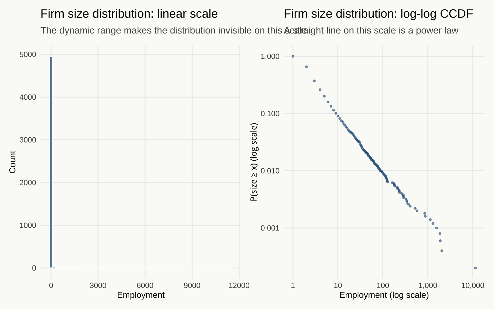
Firm size distribution on a linear scale (left) and log-log scale (right, CCDF). The dynamic range <U+2014> from single-employee firms to corporations employing hundreds of thousands <U+2014> defeats any visualization on a linear scale. The log-log plot reveals the power law: a straight line across many orders of magnitude.
# Fit power law via MLE using poweRlaw
# displ: discrete power law (appropriate for integer employment counts)
m_pl <- displ$new(firm_df$employment)
est <- estimate_xmin(m_pl)
m_pl$setXmin(est)
m_pl$setPars(estimate_pars(m_pl))
alpha_hat <- m_pl$getPars()
xmin_hat <- m_pl$getXmin()
# Fit log-normal for comparison (same xmin for fair comparison)
m_ln <- dislnorm$new(firm_df$employment)
m_ln$setXmin(xmin_hat)
m_ln$setPars(estimate_pars(m_ln))
# Compute fitted CCDFs for plotting
x_seq <- seq(xmin_hat, max(firm_df$employment), length.out = 200)
pl_ccdf_df <- tibble(
x = x_seq,
ccdf = (x_seq / xmin_hat)^(-(alpha_hat - 1)),
dist = "Power law (MLE)"
)
# Log-normal CCDF approximation via plnorm
mu_ln <- m_ln$getPars()[1]
sigma_ln <- m_ln$getPars()[2]
ln_ccdf_df <- tibble(
x = x_seq,
ccdf = plnorm(x_seq, meanlog = mu_ln, sdlog = sigma_ln, lower.tail = FALSE) /
plnorm(xmin_hat, meanlog = mu_ln, sdlog = sigma_ln, lower.tail = FALSE),
dist = "Log-normal"
)
fit_df <- bind_rows(pl_ccdf_df, ln_ccdf_df)
ggplot() +
geom_point(
data = filter(ccdf_df, employment >= xmin_hat),
aes(x = employment, y = ccdf),
color = "#888888", size = 0.8, alpha = 0.5
) +
geom_line(
data = fit_df,
aes(x = x, y = ccdf, color = dist, linetype = dist),
linewidth = 1.0
) +
scale_x_log10(labels = scales::comma) +
scale_y_log10(labels = scales::comma) +
scale_color_manual(values = c("Power law (MLE)" = "#C0392B", "Log-normal" = "#2D5F8A"),
name = NULL) +
scale_linetype_manual(values = c("Power law (MLE)" = "solid", "Log-normal" = "dashed"),
name = NULL) +
annotate("text", x = xmin_hat * 1.1, y = 0.05,
label = paste0("x\u2098\u1d35\u2099 = ", xmin_hat,
" \u03b1\u0302 = ", round(alpha_hat, 3)),
family = "Source Serif 4", size = 3.5, hjust = 0, color = "#C0392B") +
labs(
title = "Power law vs. log-normal fit",
subtitle = paste0("Estimated exponent \u03b1\u0302 = ", round(alpha_hat, 3),
" (synthetic data; substitute SUSB for real analysis)"),
x = "Employment (log scale)",
y = "P(size \u2265 x) (log scale)"
)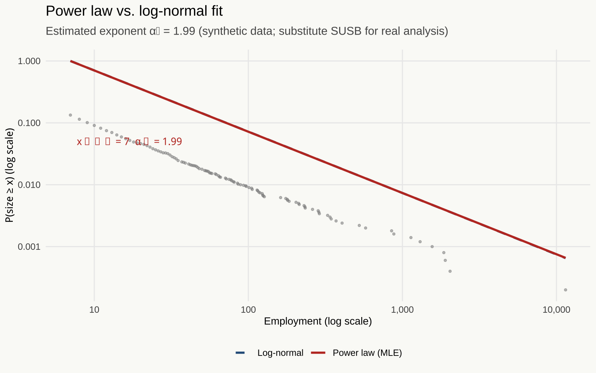
Power law fit (red line) and log-normal comparison (dashed blue) on the log-log CCDF. The power law is estimated via maximum likelihood using the package; \(x_{\min}\) is selected by minimizing the Kolmogorov-Smirnov distance between the fitted distribution and the empirical data above the threshold.
The power law fits the upper tail well. The log-normal fits less cleanly at the extreme upper end — it decays faster than the empirical distribution demands. This is not a marginal distinction: the upper tail is where the firm size distribution carries its most economically significant content. The hundred largest firms in the US employ a substantial fraction of the private sector workforce. A distribution that mismodels the upper tail mismodels the economy’s employment structure in the sector where concentration, market power, and aggregate dynamics are most consequential.
3.2 What the Standard Models Cannot Say
The SIR system tracks three numbers: \(S\), \(I\), and \(R\). The dynamics are fully determined by those totals. This is not merely a modeling convenience — it is a sufficiency claim. Given the compartment counts, the identity of which specific individuals are susceptible or infectious carries no additional information about how the epidemic evolves. The distribution of individual characteristics within compartments is irrelevant. The totals are sufficient.
This sufficiency holds exactly when the mean-field assumption holds. Under random mixing, any susceptible is as likely as any other to contact any infectious individual, so only the counts matter. Individual heterogeneity averages out. The law of large numbers makes the aggregate dynamics deterministic functions of population totals alone.
The same logic, applied to industry dynamics, produces a familiar object: a model that tracks total employment, or average firm size, rather than the distribution of employment across firms. The implicit claim is that the distribution carries no additional information — that knowing mean firm size is sufficient for understanding how the aggregate evolves. Knowing that one firm employs 200,000 workers and ten thousand firms employ fewer than ten is no more informative than knowing that all firms are of mean size. This is the statistical content of what economists call the representative agent: not a modeling shortcut but a sufficiency assumption applied to the distribution of firms.
The power law distribution is the empirical refutation of that assumption. A power law has no finite mean when \(\alpha \leq 2\), and even when the mean exists, it is a poor summary of the distribution’s behavior. The distribution is dominated by its tail. The hundred largest firms in the US economy account for a substantial fraction of private-sector employment; they respond to shocks differently, shape credit conditions differently, and drive aggregate dynamics differently than a population of mean-sized firms would. The sufficiency assumption produces the wrong object of analysis, not an imprecise approximation of the right one.
This is not a methodological complaint. It is an empirical constraint. The firm size distribution is among the most robustly documented regularities in empirical economics. It appears in every measured economy, at every measured time, in virtually every sector. A model whose language cannot express this regularity is, to that extent, describing a different economy than the one that exists.
The failure is linguistic before it is empirical. A model built on the sufficiency of the mean has no sentence in which “the distribution of firm sizes is a power law” can be written. The distribution is the phenomenon. When the language cannot contain the distribution, you have not approximated the phenomenon poorly. You have excluded it from the territory the model covers.
3.3 Axtell’s Model: Logic Without Code
Robert Axtell showed in 2001 that a remarkably simple agent-based model generates the observed US firm size distribution without calibration. The exponent emerges from the dynamics rather than being fitted to the data.
The model’s logic is spare. Agents allocate their effort between working alone and working as part of a team. Teams are groups of agents who have chosen to coordinate their work. Within a team, returns to scale are locally increasing: a worker who joins a team adds more than their individual marginal product, up to some point. This is not an unusual assumption about firm production — most accounts of the gains from economic organization depend on something similar.
Agents compare their current payoff within their team to alternative arrangements: a different team, or solo work. When a better option exists, agents move. Teams form when agents find mutually beneficial collaborations; teams dissolve when enough members find better alternatives elsewhere. There is no central planner, no equilibrium condition that pins down firm size, no seed distribution. The model starts from random initial conditions and runs.
The result is the power law. Not fitted. Generated. The exponent that emerges from the dynamics is consistent with the empirically observed exponent across a wide range of the model’s internal parameters. This robustness is the crucial point: the power law is not an artifact of a particular calibration. It is a structural consequence of the interaction rules — teams forming and dissolving under local increasing returns to scale, with agents choosing based on local information about their available alternatives.
The model does not explain why individual firms have the sizes they have. It explains why the distribution has the shape it has. The macro regularity — the power law — is not encoded in any individual agent’s rule. No agent knows the distribution. No agent is trying to produce a power law. The distribution arises from the aggregate dynamics of agents following their individual rules, and it is not visible anywhere in those rules.
3.4 Emergence
A macro-level regularity is emergent if it satisfies two conditions. It cannot be derived analytically from the micro-level rules — there is no algebraic path from the individual agent’s decision problem to the macro distribution. And it arises robustly from the dynamics of agent interaction — not an artifact of specific parameter values or initial conditions, but a structural feature that persists across a wide range of both.
The power law firm size distribution is emergent in this sense. No analysis of an individual agent’s effort allocation problem reveals the exponent. The exponent is not a property of any individual; it is a property of the aggregate dynamics that arise from the interaction of many individuals following local rules. And it is robust: Axtell showed that the exponent is insensitive to most parameter choices, which means it is structural rather than calibrated.
That robustness is more than a convenience result. Axtell’s model was not fitted to the power law. The exponent emerged from the dynamics and was then compared to the data. This is not a subtle distinction. Equilibrium models of industry dynamics had the firm size distribution in front of them for decades — the empirical regularity was documented in the 1950s, and the power law form was well established by the 1990s — and could not generate the exponent without external calibration, because the exponent is not a property of any equilibrium. It is a property of the path: the motion of teams forming and dissolving, agents switching affiliations, distributions arising from trajectories that no equilibrium condition pins down. Equilibrium analysis specifies the destination; the distribution lives in the journey.
A model that generates a known regularity without having been calibrated to it has done something that descriptive fitting cannot. It exposes the mechanism. The mechanism can then be interrogated: what changes in the interaction rules would change the exponent? What perturbations to the returns-to-scale structure shift the distribution? These questions only make sense in a language that contains the generative process. A model that describes the distribution after the fact cannot answer them, because it contains no process — only a fit.
The phenomenon is unreachable by any model that assumes mean employment is a sufficient statistic for industry dynamics — in principle, with any parameter choices. Such a model has no dynamics in the relevant sense: it has an equilibrium at which one firm employs a fixed number of workers. There is no process of team formation and dissolution. There is no mechanism through which a distribution could be generated, because the model’s language contains no concept of a distribution of firm sizes. The sufficiency assumption has collapsed exactly the dimension of heterogeneity from which the regularity is made.
Emergence, precisely defined, is a methodological constraint. If the phenomenon is emergent — if no analytical derivation from the micro rules can reach it — then the model must be dynamic, heterogeneous, and process-based. Not because agent-based modeling is philosophically preferable to equilibrium analysis. Because it is the only language in which the generative mechanism can be written.
4 The Possibility Space of Dynamics
# Chapter 4 Setup
# Self-contained — does not depend on prior chapters.
library(tidyverse)
library(deSolve)
library(patchwork)
theme_set(
theme_minimal(base_family = "Source Serif 4") +
theme(
plot.title = element_text(family = "Raleway", face = "plain",
size = 14, margin = margin(b = 8)),
plot.subtitle = element_text(family = "Source Serif 4", size = 11,
color = "#555555", margin = margin(b = 12)),
axis.title = element_text(family = "Source Serif 4", size = 10),
legend.position = "bottom",
panel.grid.minor = element_blank(),
plot.background = element_rect(fill = "#FAFAF7", color = NA)
)
)4.1 Resolution
A model does not merely approximate the world. It defines a language, and that language has an expressive boundary. A phenomenon that requires distinctions the model cannot make is not a failure of fit in the ordinary sense — it is not an error that better data or more careful estimation would reduce. It lies outside the language entirely. When a modeling tradition calls something a paradox or an anomaly, it is often naming a phenomenon that is simply exterior to its formal vocabulary: real, reproducible, and grammatically inexpressible in the available terms.
The restriction operates on different dimensions in different models, but the consequence is always the same. The mean-field assumption makes network topology and agent heterogeneity inexpressible — not unlikely, not poorly approximated, but absent from the language’s vocabulary entirely. The assumption that aggregate dynamics are determined by mean firm size makes the firm size distribution inexpressible: the distribution requires heterogeneity, and the sufficiency of the mean is the hypothesis that heterogeneity does not matter. The stationarity family makes regime change and bifurcation inexpressible — the language built from data generated before the bifurcation has no vocabulary for the turn. An equilibrium assumption makes path dependence inexpressible: which equilibrium the system reaches is indeterminate, and the assumption selects one by fiat.
None of these is a failure that better technique remedies. Each is a structural fact about the model’s language. More observations do not add words that the language lacks. More sophisticated estimation does not give the ODE a spatial dimension. The right question is not “can I fit this better?” but “can this language say what I need to say?”
Every modeling choice is a choice of resolution — temporal, spectral, expressive. The ODE, the sufficiency of the mean, stationarity, equilibrium, regularization penalties, the sampling frequency of a time series — all are restrictions on the language in which the model is written. Each restriction makes some phenomena expressible and others not. The phenomena made inexpressible are not less real than the ones the model can reach. They are simply outside the scope of what was chosen to be said.
4.2 The Regularization Unification
The connection between regularization and the ODE-ABM relationship is not analogical. It is constructive. Writing it out makes visible something that the course has been approaching from several directions simultaneously.
In an ABM, each agent \(i\) carries a property vector \(\theta_i\) — a birth rate, a productivity, a threshold for infection. Write \(\theta_i = \bar\theta + \varepsilon_i\), where \(\bar\theta\) is the population mean and \(\varepsilon_i\) is the deviation, centered so that \(\sum_i \varepsilon_i = 0\). The ODE is the model that sets \(\varepsilon_i = 0\) for every agent — all heterogeneity collapsed to the mean. Nothing about this restriction is forced by the biology or the economics. It is a structural choice about the distribution of agent properties, and that distribution is a point mass at \(\bar\theta\). An L2 penalty on \(\{\varepsilon_i\}\) shrinks agents toward their mean; as the penalty strength increases, the ABM continuously approaches the ODE. They are not separate models. They are the same model at different positions along a regularization path.
The contact structure submits to the same treatment. Represent it as a weighted adjacency matrix \(W\), where \(W_{ij} \geq 0\) is the contact rate between agents \(i\) and \(j\). Every network topology is a special case: \(W_{ij} = 0\) removes an edge; a heavy-tailed degree distribution produces the scale-free network from Chapter 2; the lattice concentrates all weight on immediate neighbors. Write the mean-field contact structure as \(\bar{W}_{ij} = 1/n\) for all \(i \neq j\) — uniform weight, every agent contacting every other at the same rate. This is not a neutral choice made for mathematical convenience. It is the maximum entropy distribution over contact matrices subject to the constraint that each agent’s total contact rate is fixed. When you know the average contact rate and nothing else about who contacts whom, \(\bar{W}\) is what the principle of maximum ignorance requires. Every departure from \(\bar{W}\) is information about contact structure beyond the mean.
Write \(W = \bar{W} + \Delta W\). The constraint \(W_{ij} \geq 0\) restricts \(\Delta W_{ij} \geq -1/n\), which defines a convex feasible region. The ODE corresponds to \(\Delta W = 0\). The two reparametrizations together give the unified statement: the ODE is the ABM under simultaneous regularization of agent heterogeneity toward \(\bar\theta\) and contact structure toward \(\bar{W}\). Formally, consider the objective
\[\mathcal{L}(\{\varepsilon_i\},\, \Delta W) \;+\; \lambda_\theta \sum_i \|\varepsilon_i\|^2 \;+\; \lambda_W \|\Delta W\|_F^2\]
As \(\lambda_\theta \to \infty\) and \(\lambda_W \to \infty\), the solution forces \(\varepsilon_i \to 0\) and \(\Delta W \to 0\), recovering the ODE exactly. At finite \(\lambda\), the solution interpolates. The regularization strengths are hyperparameters: estimable by cross-validation when individual trajectories are observed, tunable by information criteria when only aggregate data are available. Both L2 and L1 penalties on \(\Delta W\) are convex on the feasible region, so the structural regularization problem is convex throughout — a point worth noting to the audience likely to object that ABM calibration is computationally intractable. The non-convexity in ABM calibration comes from the stochastic simulation mapping parameters to outputs, not from the geometry of the parameter space itself.
The choice between L2 and L1 on \(\Delta W\) is a choice about what kind of network departure from mean-field is expected. L2 shrinks all edge weights uniformly toward \(1/n\) — the contact structure becomes progressively closer to random mixing as \(\lambda_W\) increases. L1 produces sparse \(\Delta W\): most edges sit near their mean-field weight, a few carry substantial deviations. Sparse positive entries in \(\Delta W\) are hubs — agents with far more contacts than the mean-field allocates. This is precisely the Barabási-Albert structure that drove the qualitatively different epidemic dynamics in Chapter 2. The L1 penalty on contact structure selects the epidemiologically consequential nodes, in exactly the sense that LASSO selects the consequential predictors. This is not an analogy. The mathematical operation is the same.
The Bayesian identity sharpens the argument further. A Laplace prior on \(\Delta W_{ij}\) produces the L1 penalty at the posterior mode — exactly, not approximately, by the same algebra as for regression coefficients. A Gaussian prior produces L2. The maximum entropy interpretation now closes the loop precisely: a flat prior over contact matrices subject to fixed mean contact rate is a Gaussian centered at \(\bar{W}\). Ridge regularization toward \(\bar{W}\) is therefore the correct Bayesian update under maximum ignorance about contact structure, starting from a Gaussian prior. When the analyst has no structural knowledge of the contact network beyond its mean, L2 toward the mean-field is the principled choice. L1 is appropriate when the contact network is expected to be sparse — when most agent pairs have no meaningful contact and the interesting structure is concentrated in a few edges. The penalty encodes the prior whether or not the analyst names it as one.
The unification runs further still. L2 regularization is the limiting case of training on Gaussian-perturbed inputs: as the perturbation variance shrinks to zero, the expected loss over perturbed data converges to the L2-penalized loss. The distributionally robust optimizer minimizing worst-case expected loss over a Wasserstein ball around the empirical measure recovers regularized estimators as special cases. Bayesian prior, regularization penalty, adversarial perturbation budget — three framings of the same restriction. The literature on mean-field games formalizes the reparametrization argument at infinite scale: as \(n \to \infty\) with individual effects shrinking proportionally, the discrete agent system converges to a continuum PDE — the \(\lambda \to \infty\) limit of the regularization path, studied with the tools of optimal control.
# Visualize the geometry of L1 vs L2 regularization
# The plot shows coefficient contours and constraint regions
# RSS contours centered at OLS estimate (beta1=1.5, beta2=2.0 for illustration)
beta1_ols <- 1.5
beta2_ols <- 2.0
# Grid for contour computation
b1 <- seq(-2.5, 3, length.out = 300)
b2 <- seq(-1.5, 3.5, length.out = 300)
grid_reg <- expand.grid(b1 = b1, b2 = b2) %>% as_tibble()
# RSS surface (simplified: circular contours scaled from OLS)
# Using anisotropic ellipses to reflect correlated predictors
grid_reg <- grid_reg %>%
mutate(
rss = 0.7 * (b1 - beta1_ols)^2 +
0.4 * (b2 - beta2_ols)^2 +
0.3 * (b1 - beta1_ols) * (b2 - beta2_ols)
)
# L2 constraint region: circle of radius r
r_l2 <- 1.2
constraint_l2 <- tibble(
angle = seq(0, 2*pi, length.out = 300),
b1 = r_l2 * cos(angle),
b2 = r_l2 * sin(angle)
)
# L1 constraint region: diamond |b1| + |b2| <= r
r_l1 <- 1.2
constraint_l1 <- tibble(
b1 = c(r_l1, 0, -r_l1, 0, r_l1),
b2 = c(0, r_l1, 0, -r_l1, 0)
)
# Ridge solution: project OLS onto L2 ball (simple approximation)
scale_factor_l2 <- r_l2 / sqrt(beta1_ols^2 + beta2_ols^2)
ridge_soln <- tibble(b1 = beta1_ols * scale_factor_l2,
b2 = beta2_ols * scale_factor_l2,
label = "Ridge solution")
# LASSO solution: tends toward axis (corner of diamond)
# Approximate: project onto nearest corner
if (abs(beta1_ols) > abs(beta2_ols)) {
lasso_soln <- tibble(b1 = r_l1, b2 = 0, label = "LASSO solution")
} else {
lasso_soln <- tibble(b1 = 0, b2 = r_l1, label = "LASSO solution")
}
p_l2 <- ggplot() +
geom_contour(data = grid_reg, aes(x = b1, y = b2, z = rss),
color = "#AAAAAA", breaks = c(0.5, 1.5, 3.0, 5.5, 9.0)) +
geom_path(data = constraint_l2, aes(x = b1, y = b2),
color = "#2D5F8A", linewidth = 1.2) +
geom_point(aes(x = beta1_ols, y = beta2_ols), color = "#1C1C1E", size = 2.5) +
geom_point(data = ridge_soln, aes(x = b1, y = b2),
color = "#2D5F8A", size = 3.5, shape = 18) +
geom_segment(aes(x = beta1_ols, y = beta2_ols,
xend = ridge_soln$b1, yend = ridge_soln$b2),
arrow = arrow(length = unit(0.2, "cm")), color = "#555555") +
annotate("text", x = beta1_ols + 0.15, y = beta2_ols + 0.1,
label = "OLS", family = "Source Serif 4", size = 3.2) +
labs(title = "L2 (Ridge)",
subtitle = "Circular constraint; solution shrinks toward origin",
x = expression(beta[1]), y = expression(beta[2])) +
coord_equal(xlim = c(-2.2, 2.8), ylim = c(-1.2, 3.0))
p_l1 <- ggplot() +
geom_contour(data = grid_reg, aes(x = b1, y = b2, z = rss),
color = "#AAAAAA", breaks = c(0.5, 1.5, 3.0, 5.5, 9.0)) +
geom_polygon(data = constraint_l1, aes(x = b1, y = b2),
fill = NA, color = "#8A4A2D", linewidth = 1.2) +
geom_point(aes(x = beta1_ols, y = beta2_ols), color = "#1C1C1E", size = 2.5) +
geom_point(data = lasso_soln, aes(x = b1, y = b2),
color = "#8A4A2D", size = 3.5, shape = 18) +
geom_segment(aes(x = beta1_ols, y = beta2_ols,
xend = lasso_soln$b1, yend = lasso_soln$b2),
arrow = arrow(length = unit(0.2, "cm")), color = "#555555") +
annotate("text", x = beta1_ols + 0.15, y = beta2_ols + 0.1,
label = "OLS", family = "Source Serif 4", size = 3.2) +
labs(title = "L1 (LASSO)",
subtitle = "Diamond constraint; solution tends to corners (sparsity)",
x = expression(beta[1]), y = expression(beta[2])) +
coord_equal(xlim = c(-2.2, 2.8), ylim = c(-1.2, 3.0))
p_l2 + p_l1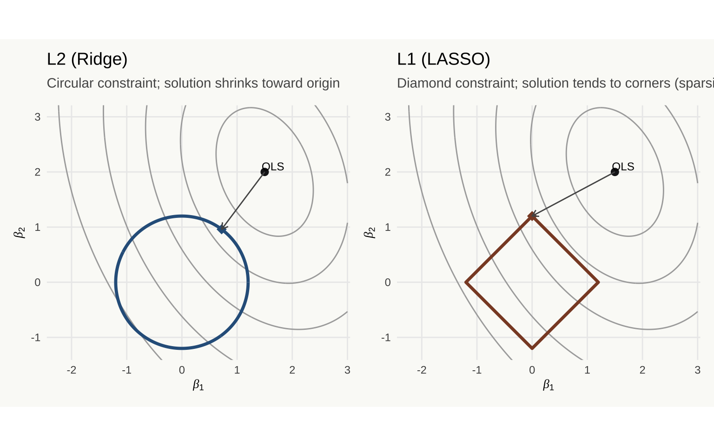
Geometry of regularization. Coefficient contours (ellipses) intersect the constraint region at the regularized solution. L2 (ridge) penalty produces a circular constraint region; the solution is generally interior with all coefficients shrunk toward zero. L1 (LASSO) penalty produces a diamond constraint region; the solution tends to land on a corner, producing sparse solutions with some coefficients exactly zero.
Every model involves two levels of restriction, and the reparametrization makes both legible. The first is the parametric family — the structural commitment that determines what phenomena are in scope. The mean-field ODE is a family: it fixes \(\varepsilon_i = 0\) and \(\Delta W = 0\) before any data are seen, admitting mass-action interactions in continuous time and excluding network structure, spatial heterogeneity, and discrete individual effects entirely. The mean-sufficient model of industry dynamics is a family: it admits dynamics driven by aggregate employment and excludes the distributional heterogeneity that generates the power law tail. The stationary time series is a family: it admits processes whose spectral structure is constant across time and excludes regime transitions. These are not parameter choices. They are structural commitments that determine what the model can say, and no quantity of data revises them — they are the grammar within which the data are interpreted.
The second level is the prior on that family — the regularization, calibrated to what the data at a particular observation frequency can support. The choice of penalty is a choice of prior, and the prior encodes beliefs about how far the true system sits from the family’s anchor point: how heterogeneous the agents are, how far the contact network departs from maximum entropy, how sparse the consequential deviations are. The ABM critic who objects to parameter proliferation is demanding stronger regularization within a richer family — legitimate when the observation frequency cannot distinguish the parameters, illegitimate when the phenomenon requires the richer family to exist at all. Both levels interact with observation frequency: the family must be appropriate at the resolution of measurement, and the prior on the family must be calibrated to what that resolution can support. When the phenomenon is the mean-field limit of large-population randomly-mixed dynamics, the ODE is correct and additional expressiveness contributes nothing. When the phenomenon is the shape of the firm size distribution, or the topology-dependence of an epidemic, the restricted family does not fit poorly — it excludes the phenomenon by design, before estimation begins.
4.3 Temporal Resolution and Near-Decomposability
All data is time-indexed. The firm size distribution has a year attached to it. The epidemic curve begins at a date. The regression coefficients are estimated from observations generated over a period. Sometimes the time label is displayed; sometimes it is known and suppressed; sometimes it is genuinely unknown. But the time structure is always present in the data-generating process, and every choice — of parametric family, of prior on that family — is a choice about how to handle it. The parametric family determines which temporal structures are expressible. The prior on the family determines what is estimable at the available observation frequency. Making these choices explicit, rather than allowing them to hide in the model’s functional form, is the discipline the framework demands.
Herbert Simon observed that complex adaptive systems tend to be nearly decomposable: subsystems interact tightly at fast time scales and loosely at slow ones. A firm coordinates its internal operations at time scales too fast for prices to clear across firms. The economy coordinates across firms at time scales over which transaction costs can be overcome. Each level of organization has its characteristic frequency. The levels are not isolated from each other, but they are not fully coupled either — the fast dynamics within each level are relatively independent of the slow dynamics between levels.
A model fit at a particular temporal resolution is a low-pass filter. It recovers structure at frequencies below the resolution’s Nyquist limit. Structure at faster frequencies is averaged out — not represented as noise, but absorbed into the model’s coefficients where it leaves no fingerprint. A quarterly macroeconomic model recovers annual and multi-year dynamics. It is linguistically incapable of expressing sub-quarterly phenomena: the model has no time steps at which to represent them. This is not a data limitation in the sense that better data collection would fix it. It is a resolution choice, and the resolution choice has consequences for what the model can say.
Stationarity is the temporal counterpart of the mean-field assumption — not analogously but structurally, because both are parametric family choices. The mean-field family averages over spatial heterogeneity within each time step, asserting that contact structure is uniform across all pairs of agents. The stationary family averages over temporal heterogeneity across the observation window, asserting that the data-generating process at time \(t\) is drawn from the same distribution as at time \(t - k\) for all \(k\). One suppresses spatial structure; the other suppresses temporal structure. Both determine what the model can express, and both interact with observation frequency in the same way: the family is appropriate when the dimension being averaged over is genuinely negligible at the relevant resolution, and misspecified when it is not.
Sampling frequency determines which family choices are testable from the available data. A model estimated at weekly frequency cannot detect dynamics faster than two weeks — the Nyquist limit is a hard constraint on what signal is recoverable at that resolution. The stationary family chosen at weekly resolution is a commitment only about weekly-and-slower structure. Whether the system is stationary at that resolution is a distinct question from whether it is stationary at finer resolutions, and the two questions have different answers whenever the system is nearly decomposable. When the system is capable of bifurcation, the stationary family is misspecified in exactly the way the mean-field family is misspecified when contact structure matters: the family does not have the vocabulary for what is about to happen.
set.seed(2025) # seed for reproducibility
K <- 1000 # carrying capacity
r <- 0.3 # intrinsic growth rate
N0 <- 10 # initial population
t_full <- seq(0, 50, by = 0.5)
N_true <- K / (1 + ((K - N0) / N0) * exp(-r * t_full))
logistic_df <- tibble(t = t_full, N = N_true)
# Observed data: only the exponential phase (t <= 10)
obs_df <- filter(logistic_df, t <= 10)
# Fit a linear model to log(N) ~ t on the observed data
# This corresponds to fitting an exponential model
lm_fit <- lm(log(N) ~ t, data = obs_df)
r_hat <- coef(lm_fit)["t"]
N0_hat <- exp(coef(lm_fit)["(Intercept)"])
# Extrapolate using the fitted exponential
pred_df <- tibble(t = seq(0, 50, by = 0.5)) %>%
mutate(N_pred = N0_hat * exp(r_hat * t))
ggplot() +
# True logistic trajectory
geom_line(data = logistic_df, aes(x = t, y = N),
color = "#2D5F8A", linewidth = 1.0) +
# Exponential extrapolation
geom_line(data = pred_df, aes(x = t, y = N_pred),
color = "#C0392B", linewidth = 0.9, linetype = "dashed") +
# Observed data points
geom_point(data = obs_df, aes(x = t, y = N),
color = "#1C1C1E", size = 2.0) +
# Carrying capacity reference
geom_hline(yintercept = K, color = "#888888", linetype = "dotted") +
annotate("text", x = 42, y = K + 30, label = paste0("K = ", K),
family = "Source Serif 4", size = 3.5, color = "#888888") +
annotate("text", x = 12, y = 30,
label = "Observations (t \u2264 10)", size = 3.2,
family = "Source Serif 4", color = "#1C1C1E") +
annotate("segment", x = 10, xend = 10, y = 0, yend = K + 50,
linetype = "dotted", color = "#888888") +
scale_y_continuous(labels = scales::comma, limits = c(0, 1600)) +
labs(
title = "Logistic growth: what extrapolation cannot see",
subtitle = "Blue: true trajectory. Red dashed: exponential fit to early data. The carrying capacity is invisible from observations in the exponential phase.",
x = "Time",
y = "Population"
)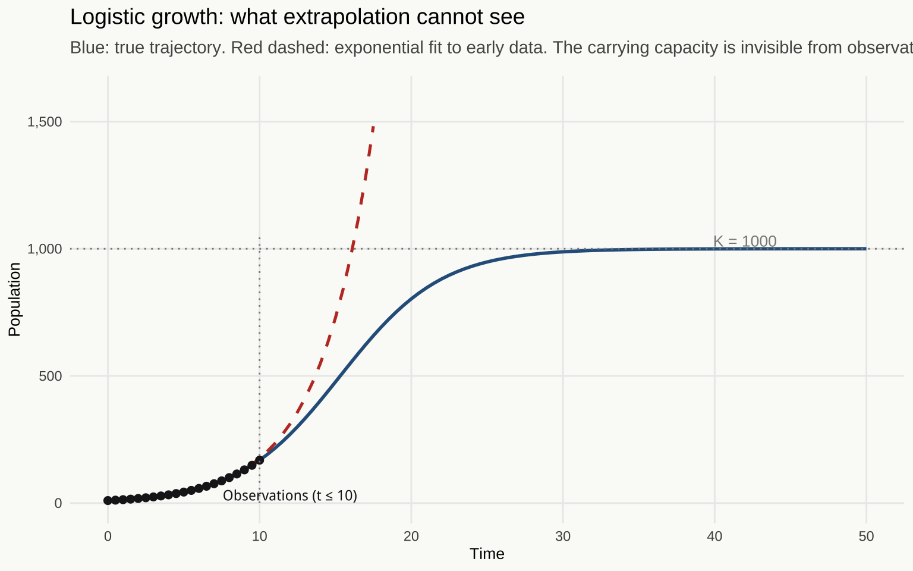
The extrapolation trap. A logistic growth process observed only in its early exponential phase (solid black points, t \(\leq\) 10) yields an exponential fit (dashed red) that projects unbounded growth. The true trajectory (solid blue) reaches a carrying capacity that is invisible from the early data. The turn is not outside the confidence interval of the fit <U+2014> it is outside the language of the model fitted to the early data.
The logistic example is the stripped-down version of a general problem. Any system capable of bifurcation will defeat stationarity-based extrapolation at the bifurcation point. The early-phase data are generated by one dynamical regime; the post-bifurcation data are generated by another. A model fitted to the early-phase data has learned the parameters of a regime that no longer exists. This is not a statistical point about forecast intervals being too narrow. It is a structural point about the limits of inductive inference from time series in nonlinear systems. The carrying capacity is not a parameter that the exponential model can estimate with more data. It is a parameter that the exponential model does not have.
set.seed(2025) # reproducibility
# Logistic map attractor: iterate the map and collect long-run values
map_attractor <- function(r_val, n_burn = 500, n_keep = 200) {
# n_burn: transient steps discarded before collecting
# n_keep: steps collected for plotting
x <- 0.5 # initial condition (interior of [0,1])
for (i in seq_len(n_burn)) x <- r_val * x * (1 - x)
xs <- numeric(n_keep)
for (i in seq_len(n_keep)) {
x <- r_val * x * (1 - x)
xs[i] <- x
}
tibble(r = r_val, x = xs)
}
# Sweep over r values
bif_df <- map_dfr(
seq(2.5, 4.0, length.out = 1200),
map_attractor,
n_burn = 500,
n_keep = 150
)
ggplot(bif_df, aes(x = r, y = x)) +
geom_point(size = 0.05, alpha = 0.3, color = "#2D5F8A") +
geom_vline(xintercept = 3.0, linetype = "dashed", color = "#C0392B", linewidth = 0.6) +
geom_vline(xintercept = 3.449, linetype = "dashed", color = "#8A4A2D",
linewidth = 0.6, alpha = 0.7) +
annotate("text", x = 3.02, y = 0.95, label = "Period 2",
family = "Source Serif 4", size = 3.0, color = "#C0392B", hjust = 0) +
annotate("text", x = 3.47, y = 0.95, label = "Period 4",
family = "Source Serif 4", size = 3.0, color = "#8A4A2D", hjust = 0) +
labs(
title = "Bifurcation diagram: logistic map",
subtitle = "Long-run attractor values as the growth parameter r increases. The turn into chaos cannot be anticipated from pre-bifurcation data.",
x = "Growth parameter (r)",
y = "Long-run attractor value (x)"
)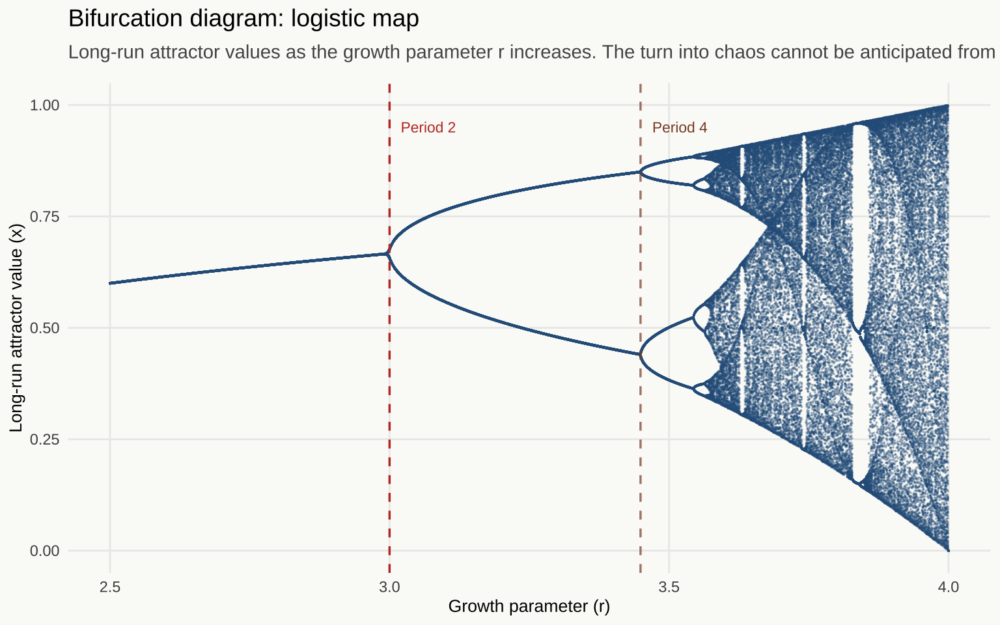
Bifurcation diagram of the logistic map \(x_{t+1} = r x_t(1 - x_t)\). For \(r < 3\), the system converges to a single fixed point. At \(r = 3\), a period-doubling bifurcation occurs. By \(r \approx 3.57\), the system enters chaos. A time series model fitted to data from \(r = 2.8\) has no representation for the behavior at \(r = 3.5\): the bifurcation is exterior to the language of the stationary model.
A time series model calibrated on data from the stable fixed-point regime (\(r < 3\)) has learned a stationary process. At \(r = 3\), the system bifurcates to a period-two cycle. The stationary model has no representation for this — its language contains the word “stationary process” but not the word “bifurcation.” The turn is not an outlier that the model underestimates. It is a structural change that moves the system outside the language the model was built in.
4.4 The Epistemology of Turning Points
Any trend extrapolated far enough produces an absurdity. A bond that compounds at five percent for long enough exceeds global GDP. A population growing at one percent doubles in seventy years and doubles again, until someone notices that the land does not. These projections are not errors of arithmetic. They are accurate outputs of models whose language contains no word for the ceiling. The problem is not extreme extrapolation. It is that any model built from data within a single phase of a cyclical system is, by construction, a model of that phase — and a phase, extrapolated, is infinite.
The observation that human affairs cycle rather than trend is old enough that its antiquity should give pause. Polybius, writing after Carthage, described anacyclosis: the sequence from monarchy through tyranny, from aristocracy through oligarchy, from democracy through mob rule and back to the need for monarchy. The form is not random deterioration but a structured progression, each stage generating the conditions that produce the next. The Platonic version is more pessimistic: the sequence runs in one direction, each form a degradation of the last. What both share, and what matters here, is the structure of the claim. Stability is not neutral. It is generative — of the conditions that will end it.
Ibn Khaldun, writing in the fourteenth century, gave this intuition its first formal treatment. Dynastic power rises on the strength of asabiyyah — group solidarity, the capacity for collective action that desert tribes possess in greater abundance than the sedentary populations they displace. Success dilutes it. Urban comfort, internal competition, the purchase of mercenary armies in place of kin-based ones: the mechanisms by which a dynasty’s own dominance dissolves its original advantage are detailed, not vague. The cycle has a period: Ibn Khaldun estimated roughly four generations, approximately a century. The model is not falsified by the collapse of any particular dynasty. It is confirmed, because the collapse is what the model predicts.
Nikolai Kondratiev, writing in the 1920s, found a similar structure in industrialized economies. Long waves of approximately fifty years — expansion followed by contraction — seemed to characterize the historical series of prices, output, and interest rates since the beginning of industrial capitalism. Kondratiev did not explain the waves; he identified them. Schumpeter supplied the mechanism. Each wave is driven by a cluster of general-purpose technologies — the steam engine, the railways, electrification, the internal combustion engine — that open new productive frontiers, stimulate investment and employment through the expansion phase, and eventually saturate. The carrying capacity of any particular technological wave is finite. The expansion ends not because demand runs out but because the opportunities the technology created have been realized. The language of the expansion phase, fitted to expansion data, has no parameter for saturation.
Hyman Minsky’s version is the sharpest. Stability, he argued, breeds instability — not as metaphor but as mechanism. A period of financial calm licenses leveraged risk-taking: lenders relax standards, borrowers extend, asset prices rise to reflect the expectation that they will continue to rise. The longer the calm persists, the more the system’s structure shifts toward fragility, because the calm is evidence — compelling, well-fitted evidence — that leverage is safe. A lender operating from a model calibrated on the calm period is not being irrational. The model is a good fit to the data it was fitted on. It simply has no representation for the regime change that the calm’s own dynamics are producing. The Minsky moment, when it comes, is not an outlier the model underweighted. It is a structural change into a regime the model could not express.
Reinhart and Rogoff catalogued eight centuries of financial crises and found the same pattern preceding every one: confident expert opinion that the old rules no longer applied, that this cycle was different, that the leverage was sustainable. This is not irrationality. It is the predictable output of models fitted to pre-crisis data by agents who understood their models perfectly and whose models were right about everything they were capable of saying. The crisis is exterior to the language of the models used to not predict it.
set.seed(2025) # reproducibility
# Stylized long-wave cycle: sustained oscillation around a stable mean.
# Period of 50 units, echoing Kondratiev's empirical estimate.
t_full <- seq(0, 130, by = 0.5)
baseline <- 100
amplitude <- 35
period <- 50
signal <- baseline + amplitude * sin(2 * pi * t_full / period)
# Add a small amount of noise to represent real data
noise <- rnorm(length(t_full), 0, 2)
cycle_df <- tibble(t = t_full, true = signal, observed = signal + noise)
# Window A: expansion phase — the upswing (t ∈ [5, 20])
win_a <- filter(cycle_df, t >= 5, t <= 20)
fit_a <- lm(observed ~ t, data = win_a)
# Window B: contraction phase — the downswing (t ∈ [32, 47])
win_b <- filter(cycle_df, t >= 32, t <= 47)
fit_b <- lm(observed ~ t, data = win_b)
# Extrapolate each fit forward to t = 75
extrap_t <- seq(5, 75, by = 0.5)
extrap_df <- bind_rows(
tibble(t = extrap_t, fit = predict(fit_a, tibble(t = extrap_t)), window = "Expansion fit"),
tibble(t = extrap_t, fit = predict(fit_b, tibble(t = extrap_t)), window = "Contraction fit")
)
# Shade the observation windows
shade_a <- tibble(xmin = 5, xmax = 20, ymin = 40, ymax = 165)
shade_b <- tibble(xmin = 32, xmax = 47, ymin = 40, ymax = 165)
ggplot() +
# Shaded observation windows
geom_rect(data = shade_a, aes(xmin = xmin, xmax = xmax, ymin = ymin, ymax = ymax),
fill = "#2D5F8A", alpha = 0.08) +
geom_rect(data = shade_b, aes(xmin = xmin, xmax = xmax, ymin = ymin, ymax = ymax),
fill = "#C0392B", alpha = 0.08) +
# True cycle (shown after observation period as dotted)
geom_line(data = filter(cycle_df, t <= 75),
aes(x = t, y = true),
color = "#555555", linewidth = 0.8, linetype = "dotted") +
# Observed data points in each window
geom_point(data = win_a, aes(x = t, y = observed),
color = "#2D5F8A", size = 1.5, alpha = 0.8) +
geom_point(data = win_b, aes(x = t, y = observed),
color = "#C0392B", size = 1.5, alpha = 0.8) +
# Extrapolations
geom_line(data = extrap_df,
aes(x = t, y = fit, color = window, linetype = window),
linewidth = 0.85) +
scale_color_manual(
values = c("Expansion fit" = "#2D5F8A", "Contraction fit" = "#C0392B")
) +
scale_linetype_manual(
values = c("Expansion fit" = "solid", "Contraction fit" = "solid")
) +
annotate("text", x = 12.5, y = 155, label = "Window A\n(expansion)",
family = "Source Serif 4", size = 3.0, color = "#2D5F8A") +
annotate("text", x = 39.5, y = 155, label = "Window B\n(contraction)",
family = "Source Serif 4", size = 3.0, color = "#C0392B") +
coord_cartesian(ylim = c(45, 165)) +
labs(
title = "Two windows, two extrapolations",
subtitle = "Dotted: true cycle. Shaded: observation windows. Solid lines: linear trend extrapolations from each window.",
x = "Time",
y = "Index",
color = NULL,
linetype = NULL
) +
theme(legend.position = "bottom")![Two observation windows on the same cycle produce opposite extrapolations, both confident, both wrong at the turning point. A linear trend fitted to the expansion phase (blue, left window) predicts continued growth. The same model structure fitted to the contraction phase (red, right window) predicts continued decline. The turn between phases is precisely what neither model can anticipate: it is exterior to the language of any model fitted entirely within one phase. The structure is stylized after Kondratiev long waves, with a period of fifty time units.](abm_course_book_files/figure-html/ch4-two-windows-1.png)
Two observation windows on the same cycle produce opposite extrapolations, both confident, both wrong at the turning point. A linear trend fitted to the expansion phase (blue, left window) predicts continued growth. The same model structure fitted to the contraction phase (red, right window) predicts continued decline. The turn between phases is precisely what neither model can anticipate: it is exterior to the language of any model fitted entirely within one phase. The structure is stylized after Kondratiev long waves, with a period of fifty time units.
The two extrapolations in that figure are not bad statistical practice. Each is the correct output of a model well-fitted to its observation window. The residuals are small, the fit is good, the extrapolation is what the model implies. The models are wrong about the future not because they are poorly estimated but because they are built in a language that has no representation for the phase transition. More data from the same window would give tighter confidence bands and a more confident wrong answer.
This is the genealogy of the stationarity problem. Stationarity is not an assumption about noise — it is an assumption about regime. It asserts that the data-generating process visible in the observation window persists. When the system has a cyclical structure, this assertion is always temporarily true and permanently misleading: it is true within any phase long enough to fit a model, and it predicts the wrong turn every time. The model inherits nothing from its predecessors across the phase boundary because the phase boundary is precisely what the model cannot see.
The Kondratiev observation, the Minsky mechanism, the Ibn Khaldun genealogy of dynasties — these are all claims that the most important events in the system’s history are phase transitions, and that models fitted within a phase are, by construction, blind to them. This is not a counsel of despair about time series modeling. It is a demand for precision about what time series models can and cannot say, and therefore about which questions they can and cannot answer. A model that fits the expansion phase fits the expansion phase. The question of whether the expansion will continue is a question about the regime structure — about where in the cycle the system currently sits, and what conditions govern the transition — and it is exterior to the language of any model that takes the expansion phase as its universe.
4.5 The Possibility Space
The agent-based model does not produce better point forecasts. It is not a superior extrapolation engine. A model that represents the full heterogeneity of a firm population does not thereby know where the economy will be in ten years with more precision than a model tracking mean firm size does. Forecasting is not the point.
What the ABM offers is a map of the possibility space — the range of qualitatively distinct behaviors the system is capable of producing, the conditions under which each is realized, and the locations of the boundaries between them. These boundaries are not forecast errors. They are structural features of the system’s dynamics. A map that shows them is a different kind of knowledge than a point forecast, and in many circumstances it is more useful.
Consider the contrast. A policy advisor working from a single trajectory — “the economy will grow at 2.3% next year, inflation will be 3.1%” — is navigating with a point. The point may be calibrated well or poorly; either way, it is a point. A policy advisor working from a possibility space map knows which dynamical regimes are accessible from the current state, what conditions would trigger a transition between them, and which interventions have leverage at the critical points. The map does not eliminate uncertainty. It characterizes it structurally, rather than reporting a number that suppresses the structure by design.
set.seed(2025) # reproducibility
# Stochastic logistic growth: same starting point, different trajectories
# Stochasticity comes from demographic noise (discreteness of individuals)
r_growth <- 0.3
K_cap <- 500
N_start <- 20
T_traj <- 60
n_traj <- 30
run_stochastic_logistic <- function(seed, N0, r, K, T) {
set.seed(seed)
N <- N0
traj <- numeric(T + 1)
traj[1] <- N
for (tt in 2:(T + 1)) {
# Expected growth rate from logistic equation
expected_growth <- r * N * (1 - N / K)
# Add demographic stochasticity: births and deaths are Poisson draws
births <- rpois(1, max(0, expected_growth))
deaths <- rpois(1, max(0, -expected_growth + r * N^2 / K))
N <- max(0, N + births - deaths)
traj[tt] <- N
}
tibble(t = 0:T, N = traj, seed = seed)
}
trajectories_df <- map_dfr(1:n_traj, run_stochastic_logistic,
N0 = N_start, r = r_growth, K = K_cap, T = T_traj)
# Deterministic solution for reference
t_det <- seq(0, T_traj, by = 0.5)
N_det <- K_cap / (1 + ((K_cap - N_start) / N_start) * exp(-r_growth * t_det))
det_df <- tibble(t = t_det, N = N_det)
ggplot() +
geom_line(
data = trajectories_df,
aes(x = t, y = N, group = seed),
alpha = 0.2, linewidth = 0.4, color = "#2D5F8A"
) +
geom_line(
data = det_df,
aes(x = t, y = N),
color = "#1C1C1E", linewidth = 1.1
) +
geom_hline(yintercept = K_cap, linetype = "dotted", color = "#888888") +
annotate("text", x = T_traj - 3, y = K_cap + 18,
label = paste0("K = ", K_cap), family = "Source Serif 4",
size = 3.2, color = "#888888") +
labs(
title = "Possibility space: stochastic logistic growth",
subtitle = paste0(n_traj, " trajectories from the same initial condition (N\u2080 = ", N_start, "). ",
"Solid: deterministic trajectory."),
x = "Time",
y = "Population"
)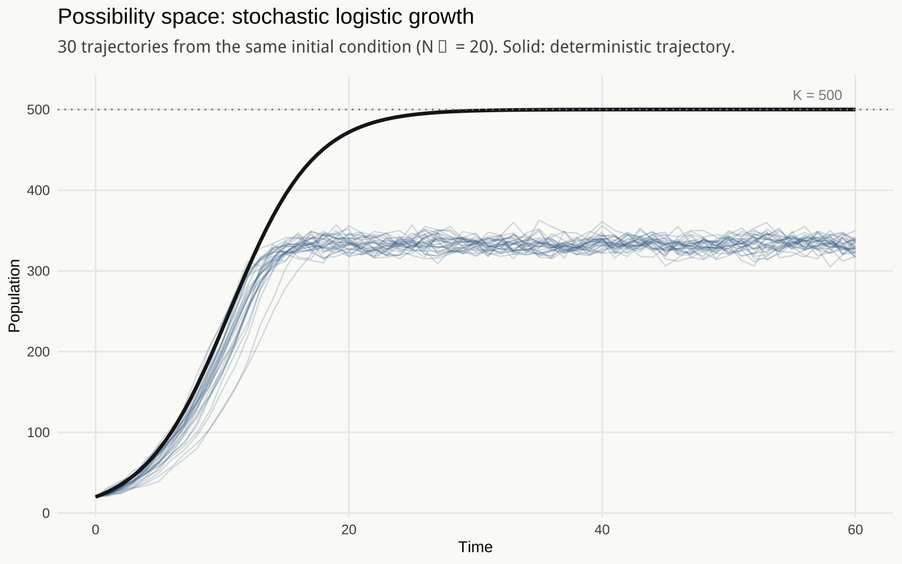
Multiple trajectories from the same initial condition. A stochastic system starting from the same initial state can realize qualitatively different outcomes. The cloud of trajectories is the possibility space <U+2014> not a confidence interval around a single forecast, but a map of qualitatively distinct futures the system can reach. The distinctions that matter are often between qualitative regimes, not between nearby trajectories within the same regime.
This is what honest cartography looks like. Not “the population will be \(K\) at time \(T\)” but “these are the trajectories accessible from this starting point, these are the conditions that push toward the upper envelope, and extinction is accessible when the population falls below a certain threshold from which recovery becomes unlikely.” The map and the point forecast are not competing forecasts of the same thing. They are answers to different questions — and the question the map answers is often the more useful one.
4.6 The Statistician’s Checklist
The statistician’s instinct toward honest uncertainty quantification is correct. Confidence intervals, posterior distributions, prediction intervals, cross-validation — these are all ways of refusing to report false precision. They are formal structures for saying “I do not know exactly, and here is what I do know about how much I do not know.” This course has argued that the same instinct should extend from parameter uncertainty to structural uncertainty: not only “what are the plausible values of this parameter?” but “is this the right language for the question I am asking?”
The checklist question is: at what resolution is this model working, and is the phenomenon I care about expressible at that resolution?
It applies to any regression model: the phenomenon may be a nonlinear threshold effect that a linear model cannot represent, regardless of sample size or estimation efficiency. It applies to any time series model: the phenomenon may be a regime change that a stationary model cannot anticipate, because the change moves the system outside the distribution the model was fitted on. It applies to any compartmental epidemic model: the phenomenon may be hub-driven super-spreading in a heterogeneous contact network, which the mean-field model cannot reach. It applies to any model of industry dynamics: the phenomenon may be the distribution of firm sizes, which a model tracking mean employment cannot express, because the mean is not a sufficient statistic for a power law tail.
Most phenomena are well-served by the ODE, the linear model, the aggregate mean. Their restrictions are warranted when the phenomena of interest sit inside their expressive range — and very often they do. The checklist is not a case for ABM. It is a case for knowing which language you are speaking and whether the question fits the grammar. The ABM is what you reach for when the answer to the checklist question is no — when the phenomenon requires heterogeneity the model has collapsed, dynamics the model cannot generate, or structure at a resolution the model does not reach. Name the language, identify the boundary, ask the question. The rest follows from the answer.
The tools are harder. The proofs are less clean. The answers are less crisp. They are more likely to be true.